视频切分与剪辑建议 Demo · DOVER 美学打分版
对照：基线版报告 （VLM 精彩度打分）。基线版用 ≤8 秒切分、每段 2 张关键帧，按 VLM 精彩度 选片；本版切分 ≤10 秒（2026-10-26 前切分的视频仍是 ≤8 秒）、 关键帧每 2 秒一张，片段得分以 DOVER 美学分为主。
2026-10-28 · 本机 Core Ultra 5 225U / 15.4 GB，无独显 · 切分 PySceneDetect AdaptiveDetector + 叠化检测 · 打标签 Qwen3-VL-2B Q4_K_M（llama.cpp Vulkan）· 美学打分 DOVER（CPU，S-Lab 许可，仅内部验证）· 剪辑建议为规则打分 + 槽位填充
1. 切分评测（合成视频，切点已知）
两层切分：PySceneDetect AdaptiveDetector 找硬切 + 线性混合检验找叠化， 镜头内再按 ≤10 秒切窗口，短于 1 秒的碎片并入相邻片段。
调参集：03/04/05 一镜到底片段拼接（叠化阈值在此集上确定）
素材 03/04/05 · 40.5s · 切点 7 · 容差 ±0.5s
| 真实切点 | 类型 | 结果 |
|---|---|---|
| 5.00s | 跳切 | ✓ 检出 5.00s（硬切） |
| 10.00s | 硬切 | ✓ 检出 10.00s（硬切） |
| 16.00s | 硬切 | ✓ 检出 16.00s（硬切） |
| 21.00s | 硬切 | ✓ 检出 21.00s（硬切） |
| 26.00s | 硬切 | ✓ 检出 26.00s（硬切） |
| 30.50s | 叠化 | ✓ 检出 30.50s（叠化） |
| 35.50s | 叠化 | ✓ 检出 35.50s（叠化） |
留出集：01/02/06 片段拼接，叠化 0.5–1.5 秒（阈值确定后才构建）
素材 01/02/06 · 33.5s · 切点 6 · 容差 ±0.5s
| 真实切点 | 类型 | 结果 |
|---|---|---|
| 5.50s | 硬切 | ✓ 检出 5.50s（硬切） |
| 10.50s | 叠化 | ✗ 漏检 |
| 15.25s | 叠化 | ✗ 漏检 |
| 19.75s | 叠化 | ✗ 漏检 |
| 24.50s | 硬切 | ✓ 检出 24.50s（硬切） |
| 29.00s | 叠化 | ✗ 漏检 |
结论：硬切（含调参集里的跳切）在两组上全部检出、无误报；叠化只在调参集上检出， 留出集 4 个叠化全部漏检。原因是"中间帧≈前后帧线性混合"的检验假设两段画面基本静止， 手持行走素材里两段都在动，混合残差与普通运镜无法区分。渐变转场需要换学习型检测器 （如 TransNetV2）。漏检的后果是一个片段跨两个场景；8 秒窗口上限限制了影响范围。
2. 精彩瞬间 · 只按得分（全集合 2.3 分钟 / 目标 2.2 分钟）
对照基线，不用大纲：以切分片段为单位整段选入（1–5 分：DOVER 美学分占 80%、VLM 精彩度占 20%，再减画质扣分；美学分先在同一时段内取百分位）； 每 5 分钟至少选一段，60 秒内标签高度重合的只留一段；按拍摄时间排列。
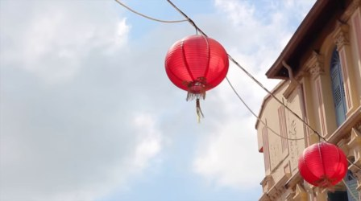
1. 精彩 2.2svlog/01_lion_city_singap 0:05.8–0:07.9
两盏红色灯笼悬挂在电线之上，背景是蓝天白云和欧式建筑。
得分 4.3，近景，节日装饰、中国风、灯笼
vlog/01_lion_city_singap 0:07.9–0:11.2
镜头在一条装饰有红色灯笼的彩色建筑街道上缓慢移动，展示着具有殖民地风格的建筑。
得分 4.0，中景，街景、建筑、灯笼
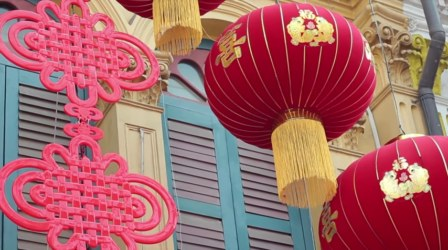
3. 精彩 2.6svlog/01_lion_city_singap 0:11.2–0:13.8
春节期间悬挂的红色灯笼和中国结
得分 4.4，近景，春节、灯笼、中国结
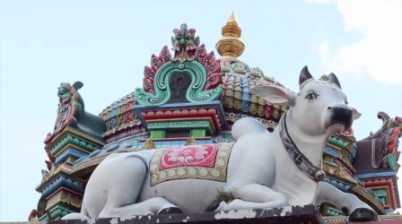
4. 精彩 2.6svlog/01_lion_city_singap 0:17.0–0:19.6
镜头聚焦于一座色彩斑斓的印度教寺庙建筑顶部，一只白色神兽雕像卧在装饰华丽的屋顶上。
得分 4.0，特写，宗教建筑、印度神兽、寺庙雕塑
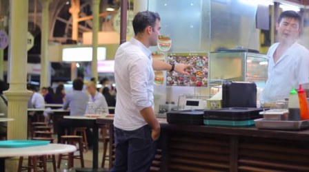
5. 精彩 2.0svlog/01_lion_city_singap 0:28.4–0:30.4
一名男子在市场摊位前与店员互动，似乎在点餐。
得分 4.2，中景，市场、餐饮、互动
vlog/01_lion_city_singap 0:49.7–0:53.1
男子在室内吃冰淇淋，背景是彩色线轴。
得分 4.8，中景，美食、冰淇淋、日常
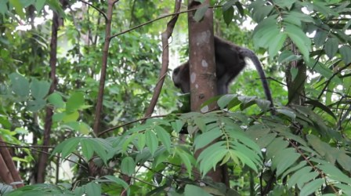
7. 精彩 5.2svlog/01_lion_city_singap 1:26.0–1:31.3
一只猴子在茂密的森林中攀爬树干
得分 4.5，近景，猴子、森林、动物
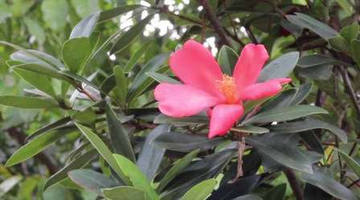
8. 精彩 5.5svlog/01_lion_city_singap 1:35.5–1:41.1
一朵粉红色花朵在绿叶丛中绽放
得分 4.5，特写，花卉、自然、特写
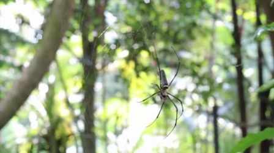
9. 精彩 4.5svlog/01_lion_city_singap 1:41.1–1:45.5
森林中一只蜘蛛在蛛网上静止不动
得分 4.6，特写，自然、昆虫、森林
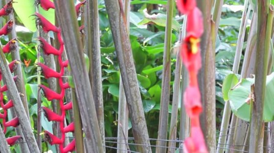
10. 精彩 6.1svlog/01_lion_city_singap 1:45.5–1:51.6
镜头聚焦于一株红色花序的植物，展示了其从上到下的特写。
得分 4.4，近景，植物、花卉、特写
 11. 精彩 5.0s
11. 精彩 5.0svlog/01_lion_city_singap 2:37.4–2:42.4
新加坡鱼尾狮雕像喷水，背景是现代化高楼。
得分 4.5，远景，旅游景点、城市风光、地标建筑
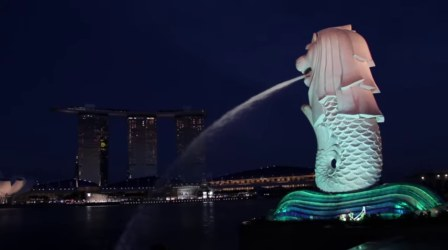
12. 精彩 5.3svlog/01_lion_city_singap 2:42.4–2:47.7
夜晚的鱼尾狮雕像喷水，背景是滨海湾金沙酒店。
得分 4.7，远景，旅游景点、城市夜景、地标建筑
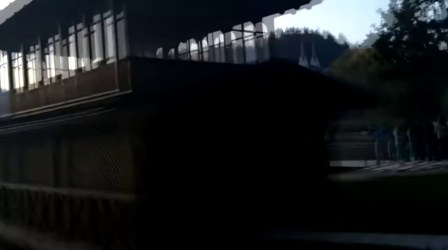
13. 精彩 8.8svlog/02_bled_bohinj_vlog 2:17.9–2:26.7
一艘载有游客的木船在湖上划行，船夫正在用桨划水。
得分 4.1，中景，湖上划船、旅游、自然风光
vlog/02_bled_bohinj_vlog 2:26.7–2:31.5
一艘带遮阳篷的木船在湖上行驶，船上有乘客和一名划桨者。
得分 4.4，远景，湖泊、旅游、船
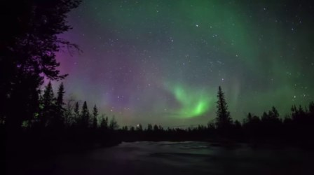
15. 精彩 5.2svlog/03_aurora_timelapse 0:17.2–0:22.4
夜空中绿色极光在湖面和树林间舞动，月光倒映在水面上。
得分 4.7，远景，极光、自然景观、夜景
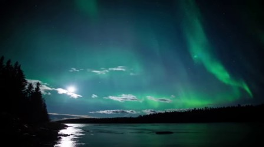
16. 覆盖 7.2svlog/03_aurora_timelapse 0:34.7–0:41.9
夜空中绿色极光在湖面和树林间舞动，月光洒在水面上。
得分 5.0，远景，极光、自然景观、夜景
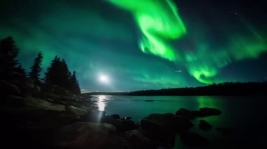
17. 精彩 7.5svlog/03_aurora_timelapse 1:45.3–1:52.8
夜空中绿色极光舞动，月光与人造光源交织辉映湖面，镜头缓慢推进并捕捉动态变化。
得分 4.5，远景，极光、自然景观、夜景
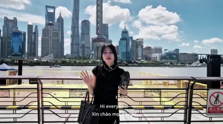
18. 精彩 2.8svlog/06_shanghai_24h_vlo 0:00.0–0:02.8
一位女士在户外餐厅与店员互动，背景是热闹的街边小吃摊。
得分 4.1，中景，街头美食、互动场景、城市生活
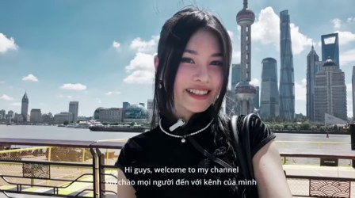
19. 精彩 3.0svlog/06_shanghai_24h_vlo 0:16.0–0:19.0
女子在河边向镜头打招呼，背景是上海标志性建筑。
得分 4.5，中景，旅游、上海、城市风光
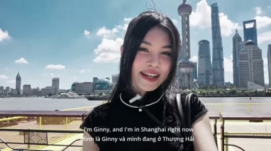
20. 精彩 6.2svlog/06_shanghai_24h_vlo 0:19.0–0:25.2
女孩在河边的观景台上对着镜头说话，背景是上海的城市天际线。
得分 4.1，中景，旅行、城市风光、女性
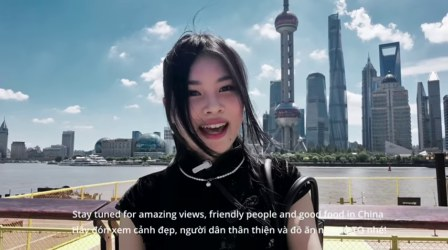
21. 精彩 5.1svlog/06_shanghai_24h_vlo 0:39.0–0:44.1
一位女性在黄浦江畔的上海外滩，背景是标志性建筑群，她正在对着镜头说话。
得分 4.6，中景，旅游、上海、外滩
vlog/06_shanghai_24h_vlo 0:44.1–0:48.8
在机场巴士站，手持一张带有二维码的纸质凭证，背景是停靠的巴士和指示牌。
得分 4.3，近景，机场、巴士站、乘车凭证
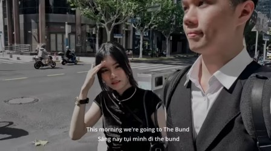
23. 精彩 4.0svlog/06_shanghai_24h_vlo 1:20.9–1:24.9
一对男女在城市街道上行走，背景有公交车和路人。
得分 4.2，中景，城市漫步、街头旅行、情侣
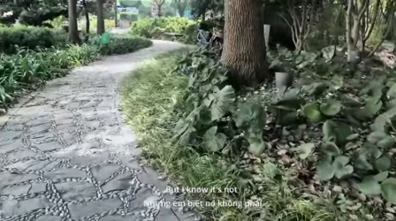
24. 精彩 8.5svlog/06_shanghai_24h_vlo 2:40.5–2:48.9
动画风格的城市街道场景，摩托车在路口等待通行。
得分 4.3，中景，动画电影、城市街道、交通信号灯
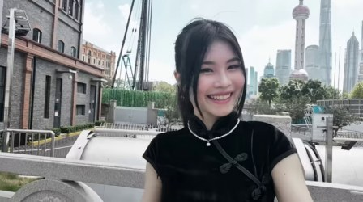
25. 精彩 2.4svlog/06_shanghai_24h_vlo 3:05.6–3:08.0
女子在户外城市景观前微笑并挥手致意。
得分 4.4，中景，城市风光、女性、微笑
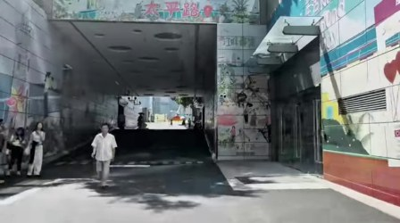
26. 覆盖 5.4svlog/06_shanghai_24h_vlo 3:45.5–3:50.8
女子在河边码头上对着镜头介绍上海城市景观。
得分 4.5，中景，旅游、上海、城市景观
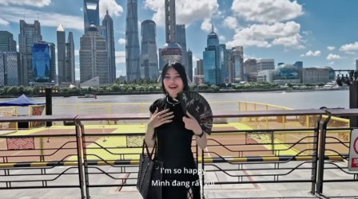
27. 精彩 2.4svlog/06_shanghai_24h_vlo 3:50.8–3:53.2
女子在河边码头上开心地展示手中的扇子，背景是上海标志性建筑群。
得分 4.4，中景，城市风光、女性、夏日
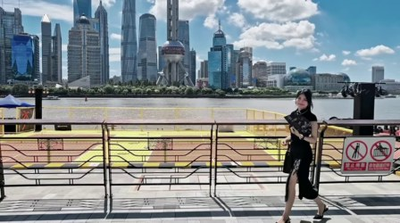
28. 精彩 3.1svlog/06_shanghai_24h_vlo 4:03.8–4:06.8
女子在河边的步道上行走，背景是上海的城市天际线。
得分 4.1，远景，城市风光、女性、户外活动
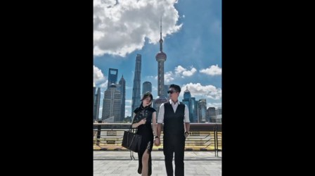
29. 精彩 7.8svlog/06_shanghai_24h_vlo 4:09.9–4:17.7
一位年轻女子在阳光明媚的城市河边漫步，手持雨伞，边走边说话。
得分 4.3，中景，户外、女性、城市风景
3. 逐视频结果
vlog/01_lion_city_singapore.webm（330ff4c78eabf568）
3:01.1 · 23.98 fps · 无音轨 · 切点 49（硬切 49，叠化 0）· 镜头 49 · 片段 50 · 保留 38 · 切分耗时 39.55s
色条：绿色越深得分越高，红色为建议删除， 蓝框为入选建议时间线的片段。
建议时间线（34.95s / 目标 30s）
vlog/01_lion_city_singap 0:49.7–0:53.1
男子在室内吃冰淇淋，背景是彩色线轴。
得分 4.7，中景，美食、冰淇淋、日常
vlog/01_lion_city_singap 1:26.0–1:31.3
一只猴子在茂密的森林中攀爬树干
得分 4.2，近景，猴子、森林、动物
vlog/01_lion_city_singap 1:35.5–1:41.1
一朵粉红色花朵在绿叶丛中绽放
得分 4.3，特写，花卉、自然、特写
vlog/01_lion_city_singap 1:41.1–1:45.5
森林中一只蜘蛛在蛛网上静止不动
得分 4.6，特写，自然、昆虫、森林
vlog/01_lion_city_singap 1:45.5–1:51.6
镜头聚焦于一株红色花序的植物，展示了其从上到下的特写。
得分 4.1，近景，植物、花卉、特写
6. 精彩 5.0svlog/01_lion_city_singap 2:37.4–2:42.4
新加坡鱼尾狮雕像喷水，背景是现代化高楼。
得分 4.2，远景，旅游景点、城市风光、地标建筑
vlog/01_lion_city_singap 2:42.4–2:47.7
夜晚的鱼尾狮雕像喷水，背景是滨海湾金沙酒店。
得分 4.3，远景，旅游景点、城市夜景、地标建筑
逐片段标签
| 片段 | 时间 | 关键帧 | 模型标签 | 美学分 / VLM 精彩度 | 画质信号 | 建议 |
|---|---|---|---|---|---|---|
| #0 镜头 0 | 0:00.0–0:04.5 4.5s | 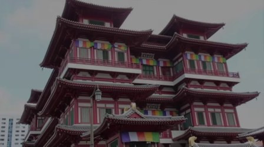 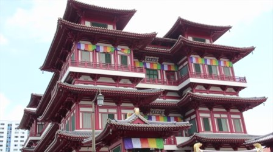 | 镜头缓慢推进,展示一座多层中式寺庙建筑 寺庙中式建筑宗教文化景观建筑特写 中景 · 白天 · 宁静祥和 · 镜头推进 | 0.51 技术 -0.047 美学 +0.049 VLM 4/5 | 抖动 亮度 101 清晰 1292 抖动 42.3 | 删除 1.6 美学模型 0.32（技术 -0.047 / 美学 +0.049）；VLM 精彩度 4/5（权重 20%）；抖动明显 |
| #1 镜头 1 | 0:04.5–0:05.8 1.3s | 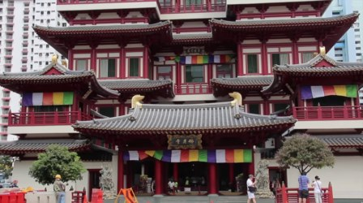 | 一座红色中式寺庙建筑，屋檐下悬挂着彩色经幡，门前有行人活动。 寺庙宗教建筑彩色经幡城市景观人文风景 远景 · 白天 · 宁静祥和 · 拍摄寺庙及门前的行人 | 0.53 技术 -0.046 美学 +0.057 VLM 3/5 | — 亮度 93 清晰 1596 抖动 0.1 | 保留 2.1 美学模型 0.38（技术 -0.046 / 美学 +0.057）；VLM 精彩度 3/5（权重 20%）；时长仅 1.3s |
| #2 镜头 2 | 0:05.8–0:07.9 2.2s | 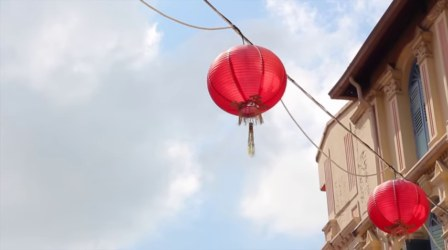 | 两盏红色灯笼悬挂在电线之上，背景是蓝天白云和欧式建筑。 节日装饰中国风灯笼建筑户外天空 近景 · 白天 · 温馨、喜庆 · 静止 | 0.71 技术 -0.028 美学 +0.116 VLM 3/5 | — 亮度 185 清晰 340 抖动 0.3 | 保留 3.9 美学模型 0.79（技术 -0.028 / 美学 +0.116）；VLM 精彩度 3/5（权重 20%） |
| #3 镜头 3 | 0:07.9–0:11.2 3.3s | 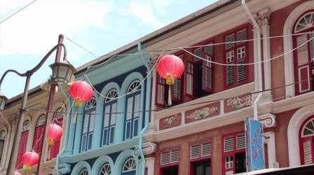 | 镜头在一条装饰有红色灯笼的彩色建筑街道上缓慢移动，展示着具有殖民地风格的建筑。 街景建筑灯笼城市风光慢动作 中景 · 白天 · 宁静 · 镜头平移 | 0.69 技术 -0.030 美学 +0.106 VLM 3/5 | — 亮度 135 清晰 1475 抖动 0.3 | 保留 3.7 美学模型 0.73（技术 -0.030 / 美学 +0.106）；VLM 精彩度 3/5（权重 20%） |
| #4 镜头 4 | 0:11.2–0:13.8 2.6s | 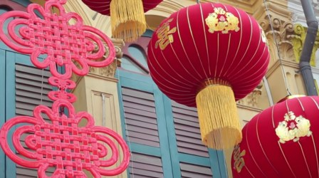 | 春节期间悬挂的红色灯笼和中国结 春节灯笼中国结节日装饰传统文化 近景 · 白天 · 喜庆 · 静止展示 | 0.68 技术 -0.030 美学 +0.105 VLM 5/5 | — 亮度 122 清晰 1343 抖动 0.1 | 保留 4.1 美学模型 0.71（技术 -0.030 / 美学 +0.105）；VLM 精彩度 5/5（权重 20%） |
| #5 镜头 5 | 0:13.8–0:17.0 3.1s | 彩色筷子整齐排列在金属架上。 筷子商品陈列日常用品色彩丰富美食文化 近景 · 白天 · 温馨、生活化 · 静置展示 | 0.61 技术 -0.078 美学 +0.111 VLM 3/5 | — 亮度 129 清晰 1148 抖动 0.1 | 保留 3.0 美学模型 0.51（技术 -0.078 / 美学 +0.111）；VLM 精彩度 3/5（权重 20%） | |
| #6 镜头 6 | 0:17.0–0:19.6 2.6s | 镜头聚焦于一座色彩斑斓的印度教寺庙建筑顶部，一只白色神兽雕像卧在装饰华丽的屋顶上。 宗教建筑印度神兽寺庙雕塑文化景观宗教艺术 特写 · 白天 · 庄严、神秘 · 静态展示 | 0.66 技术 -0.045 美学 +0.108 VLM 4/5 | — 亮度 173 清晰 1238 抖动 0.1 | 保留 3.7 美学模型 0.66（技术 -0.045 / 美学 +0.108）；VLM 精彩度 4/5（权重 20%） | |
| #7 镜头 7 | 0:19.6–0:23.6 4.0s | 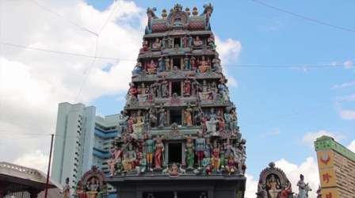 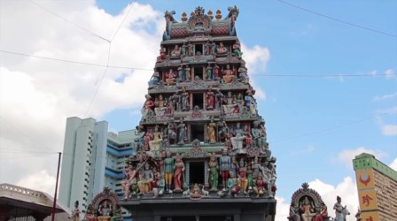  | 镜头聚焦于一座色彩斑斓、雕刻精美的印度教神庙塔门，展示了其复杂的建筑细节。 宗教建筑印度神庙文化景观寺庙塔门雕刻艺术 中景 · 白天 · 庄严、神圣 · 静态展示 | 0.52 技术 -0.058 美学 +0.060 VLM 3/5 | — 亮度 158 清晰 872 抖动 0.0 | 保留 2.5 美学模型 0.34（技术 -0.058 / 美学 +0.060）；VLM 精彩度 3/5（权重 20%） |
| #8 镜头 8 | 0:23.6–0:25.6 2.0s | 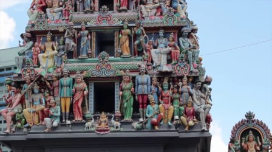 | 镜头聚焦在一座色彩斑斓、雕刻精美的印度教寺庙神庙顶部，展示了众多神像和装饰细节。 宗教建筑印度文化寺庙雕刻神像宗教艺术 特写 · 白天 · 庄严、神圣 · 静态展示 | 0.35 技术 -0.066 美学 +0.000 VLM 5/5 | — 亮度 122 清晰 1468 抖动 0.1 | 保留 2.1 美学模型 0.10（技术 -0.066 / 美学 +0.000）；VLM 精彩度 5/5（权重 20%） |
| #9 镜头 9 | 0:25.6–0:27.1 1.5s | 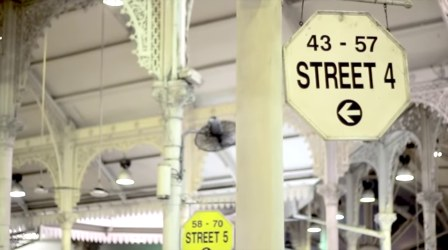 | 室内车站场景，显示街道4和5的指示牌。 车站指示牌交通城市建筑 中景 · 白天 · 安静 · 静态展示 | 0.48 技术 -0.066 美学 +0.051 VLM 3/5 | — 亮度 172 清晰 537 抖动 0.1 | 保留 2.3 美学模型 0.27（技术 -0.066 / 美学 +0.051）；VLM 精彩度 3/5（权重 20%） |
| #10 镜头 10 | 0:27.1–0:28.4 1.3s |  | 室内美食广场，人们在桌旁用餐和交谈。 美食广场人群餐厅室内场景休闲 中景 · 白天 · 热闹 · 用餐 | 0.41 技术 -0.055 美学 +0.016 VLM 4/5 | — 亮度 104 清晰 1355 抖动 0.1 | 删除 1.6 美学模型 0.16（技术 -0.055 / 美学 +0.016）；VLM 精彩度 4/5（权重 20%）；时长仅 1.3s |
| #11 镜头 11 | 0:28.4–0:30.4 2.0s | 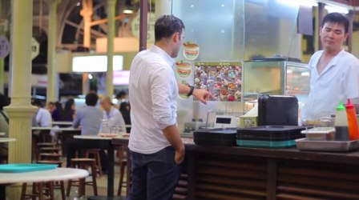 | 一名男子在市场摊位前与店员互动，似乎在点餐。 市场餐饮互动点餐街头美食 中景 · 白天 · 日常 · 顾客与店员交流并点餐 | 0.67 技术 -0.040 美学 +0.108 VLM 4/5 | — 亮度 112 清晰 399 抖动 0.1 | 保留 3.8 美学模型 0.68（技术 -0.040 / 美学 +0.108）；VLM 精彩度 4/5（权重 20%） |
| #12 镜头 12 | 0:30.4–0:32.9 2.5s | 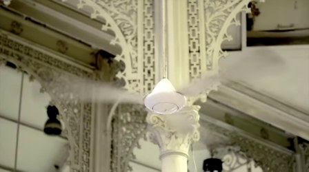 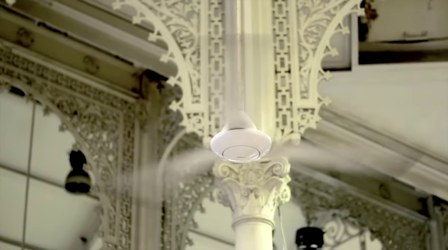 | 室内吊扇在华丽的装饰性建筑中旋转。 室内装饰性建筑吊扇旋转静谧 近景 · 白天 · 宁静 · 风扇转动 | 0.45 技术 -0.068 美学 +0.042 VLM 3/5 | — 亮度 132 清晰 152 抖动 0.1 | 保留 2.2 美学模型 0.25（技术 -0.068 / 美学 +0.042）；VLM 精彩度 3/5（权重 20%） |
| #13 镜头 13 | 0:32.9–0:34.6 1.7s | 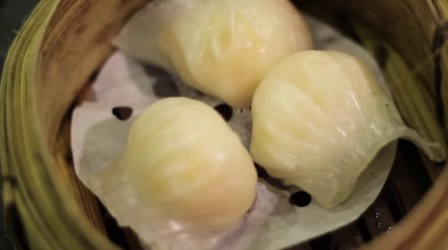 | 竹蒸笼里冒着热气的三只虾饺。 美食小吃早餐中式点心虾饺美食摄影 特写 · 白天 · 温馨 · 静置 | 0.71 技术 -0.070 美学 +0.149 VLM 3/5 | 偏糊 亮度 113 清晰 42 抖动 0.1 | 保留 2.4 美学模型 0.77（技术 -0.070 / 美学 +0.149）；VLM 精彩度 3/5（权重 20%）；画面偏糊（清晰度 42） |
| #14 镜头 14 | 0:34.6–0:36.0 1.4s | 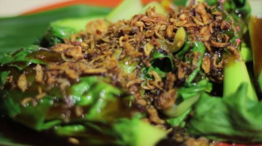 | 特写镜头展示一道淋有酱汁和炸蒜蓉的炒菜。 美食烹饪炒菜特写食物 近景 · 白天 · 美食 · 拍摄 | 0.66 技术 -0.049 美学 +0.110 VLM 5/5 | — 亮度 94 清晰 272 抖动 0.1 | 保留 3.4 美学模型 0.64（技术 -0.049 / 美学 +0.110）；VLM 精彩度 5/5（权重 20%）；时长仅 1.4s |
| #15 镜头 15 | 0:36.0–0:40.8 4.8s | 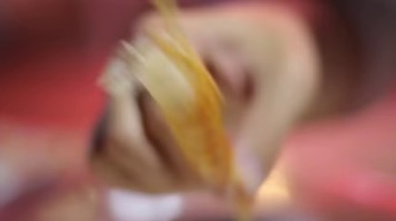 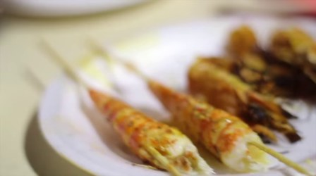 | 双手将烤虾串从竹签上取下，展示其鲜嫩多汁的内部。 美食烧烤海鲜特写食物小吃 特写 · 白天 · 美食诱惑 · 取食 | 0.35 技术 -0.100 美学 +0.025 VLM 4/5 | 偏糊、抖动 亮度 134 清晰 7 抖动 66.4 | 删除 -0.7 美学模型 0.08（技术 -0.100 / 美学 +0.025）；VLM 精彩度 4/5（权重 20%）；画面偏糊（清晰度 7）；抖动明显 |
| #16 镜头 16 | 0:40.8–0:42.2 1.3s | 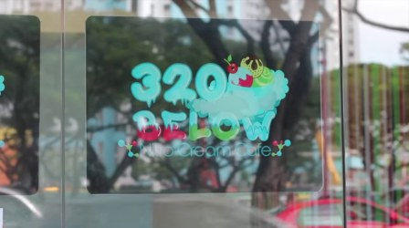 | 玻璃门上展示着一家名为'320 BELOW'的冰淇淋店招牌。 冰淇淋店招牌广告商业视觉 近景 · 白天 · 轻松愉快 · 静态 | 0.39 技术 -0.101 美学 +0.044 VLM 3/5 | — 亮度 120 清晰 233 抖动 0.8 | 删除 1.4 美学模型 0.14（技术 -0.101 / 美学 +0.044）；VLM 精彩度 3/5（权重 20%）；时长仅 1.3s |
| #17 镜头 17 | 0:42.2–0:43.6 1.5s | 架子上陈列着多款色彩斑斓、印有手绘图案的杯子。 儿童手工制品手绘杯子创意礼物艺术作品装饰品 近景 · 白天 · 温馨可爱 · 静置展示 | 0.61 技术 -0.078 美学 +0.112 VLM 3/5 | — 亮度 181 清晰 196 抖动 0.2 | 保留 2.7 美学模型 0.55（技术 -0.078 / 美学 +0.112）；VLM 精彩度 3/5（权重 20%）；时长仅 1.5s | |
| #18 镜头 18 | 0:43.6–0:46.3 2.6s | 女子在冰淇淋店微笑品尝甜点。 女性冰淇淋甜点美食微笑饮品店 中景 · 白天 · 愉快 · 品尝冰淇淋 | 0.84 技术 -0.019 美学 +0.185 VLM 4/5 | 偏糊 亮度 84 清晰 109 抖动 0.1 | 保留 3.1 美学模型 0.95（技术 -0.019 / 美学 +0.185）；VLM 精彩度 4/5（权重 20%）；画面偏糊（清晰度 109） | |
| #19 镜头 19 | 0:46.3–0:48.1 1.9s | 彩色凳子在明亮的咖啡馆里静置，背景是整齐排列的杯子。 咖啡馆彩色凳子室内场景静物色彩搭配 中景 · 白天 · 温馨、活泼 · 静态展示 | 0.59 技术 -0.082 美学 +0.107 VLM 3/5 | — 亮度 131 清晰 155 抖动 0.1 | 保留 2.9 美学模型 0.47（技术 -0.082 / 美学 +0.107）；VLM 精彩度 3/5（权重 20%） | |
| #20 镜头 20 | 0:48.1–0:49.7 1.5s | 女子在冰淇淋店品尝甜品 美食甜品女性冰淇淋店日常 中景 · 白天 · 愉悦 · 吃冰淇淋 | 0.82 技术 -0.011 美学 +0.162 VLM 4/5 | 偏糊 亮度 83 清晰 119 抖动 0.7 | 保留 3.1 美学模型 0.92（技术 -0.011 / 美学 +0.162）；VLM 精彩度 4/5（权重 20%）；画面偏糊（清晰度 119） | |
| #21 镜头 21 | 0:49.7–0:53.1 3.4s | 男子在室内吃冰淇淋，背景是彩色线轴。 美食冰淇淋日常室内休闲 中景 · 白天 · 轻松愉快 · 吃冰淇淋 | 0.85 技术 -0.014 美学 +0.188 VLM 4/5 | — 亮度 135 清晰 416 抖动 2.6 | 保留 ★入选 4.7 美学模型 0.97（技术 -0.014 / 美学 +0.188）；VLM 精彩度 4/5（权重 20%） | |
| #22 镜头 22 | 0:53.1–0:56.1 3.0s | 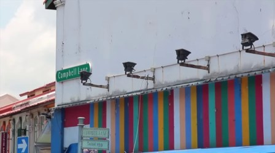 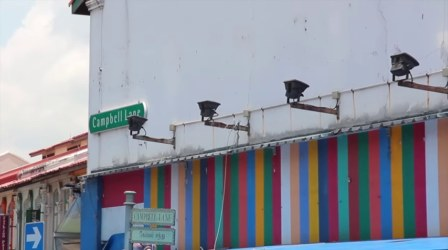 | 彩色条纹墙和街景标志牌 街头彩色条纹墙街景标志牌建筑 中景 · 白天 · 活泼 · 静止 | 0.54 技术 -0.048 美学 +0.061 VLM 3/5 | — 亮度 146 清晰 487 抖动 0.3 | 保留 2.7 美学模型 0.40（技术 -0.048 / 美学 +0.061）；VLM 精彩度 3/5（权重 20%） |
| #23 镜头 23 | 0:56.1–1:00.6 4.5s | 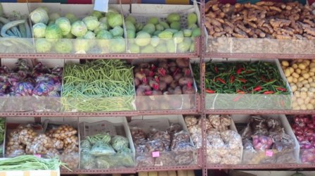 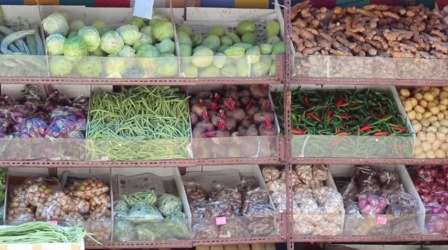 | 一个蔬菜摊位上陈列着各种新鲜蔬菜，包括卷心菜、青柠、土豆、辣椒和豆角等。 蔬菜农产品超市生鲜市场食材静物 中景 · 白天 · 新鲜、自然 · 静态展示 | 0.44 技术 -0.063 美学 +0.033 VLM 3/5 | — 亮度 130 清晰 1116 抖动 0.1 | 保留 2.1 美学模型 0.21（技术 -0.063 / 美学 +0.033）；VLM 精彩度 3/5（权重 20%） |
| #24 镜头 24 | 1:00.6–1:02.3 1.8s | 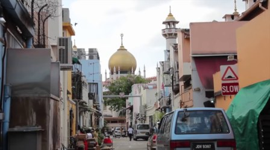 | 一条狭窄街道上，一辆银色面包车和行人从镜头前驶过，远处可见一座金色圆顶的清真寺。 城市街景清真寺汽车行人日常建筑 中景 · 白天 · 宁静 · 车辆行驶、行人行走 | 0.49 技术 -0.038 美学 +0.034 VLM 3/5 | — 亮度 126 清晰 818 抖动 0.1 | 保留 2.3 美学模型 0.29（技术 -0.038 / 美学 +0.034）；VLM 精彩度 3/5（权重 20%） |
| #25 镜头 25 | 1:02.3–1:03.4 1.0s | 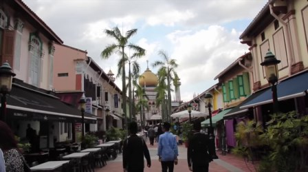 | 一条繁华的商业街，人们在步行道上行走，背景是带有金色圆顶的建筑。 街景步行商业区城市生活旅游景点 中景 · 白天 · 悠闲 · 行人行走 | 0.43 技术 -0.054 美学 +0.021 VLM 3/5 | — 亮度 110 清晰 900 抖动 0.2 | 删除 1.5 美学模型 0.18（技术 -0.054 / 美学 +0.021）；VLM 精彩度 3/5（权重 20%）；时长仅 1.0s |
| #26 镜头 26 | 1:03.4–1:04.7 1.3s | 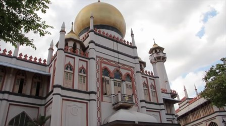 | 镜头展示一座带有金色圆顶和尖塔的白色建筑，天空多云。 建筑宗教场所地标风景户外历史建筑 远景 · 白天 · 宁静 · 固定镜头 | 0.72 技术 -0.046 美学 +0.133 VLM 3/5 | — 亮度 142 清晰 1274 抖动 0.1 | 保留 3.5 美学模型 0.82（技术 -0.046 / 美学 +0.133）；VLM 精彩度 3/5（权重 20%）；时长仅 1.3s |
| #27 镜头 27 | 1:04.7–1:06.0 1.3s | 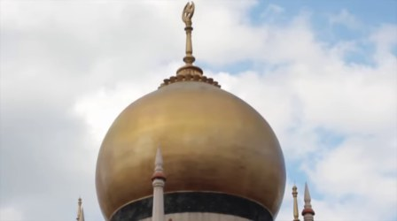 | 金色圆顶的清真寺穹顶在多云天空下 宗教建筑清真寺穹顶天空金色 特写 · 白天 · 宁静庄严 · 静止 | 0.57 技术 -0.057 美学 +0.081 VLM 3/5 | 偏糊 亮度 187 清晰 78 抖动 0.0 | 删除 0.8 美学模型 0.45（技术 -0.057 / 美学 +0.081）；VLM 精彩度 3/5（权重 20%）；画面偏糊（清晰度 78）；时长仅 1.3s |
| #28 镜头 28 | 1:06.0–1:11.3 5.3s | 镜头在茂密森林中缓慢推进，透过树叶缝隙观察前方水域。 森林自然景观慢镜头静谧户外水体 近景 · 白天 · 宁静 · 镜头前进 | 0.22 技术 -0.087 美学 -0.046 VLM 3/5 | — 亮度 44 清晰 1006 抖动 5.2 | 删除 1.4 美学模型 0.01（技术 -0.087 / 美学 -0.046）；VLM 精彩度 3/5（权重 20%） | |
| #29 镜头 29 | 1:11.3–1:16.2 4.9s | 女子背对镜头在森林中的吊桥上行走 自然风光户外活动女性森林步道吊桥慢动作 中景 · 白天 · 宁静 · 行走 | 0.36 技术 -0.095 美学 +0.027 VLM 4/5 | — 亮度 53 清晰 2284 抖动 0.9 | 删除 2.0 美学模型 0.12（技术 -0.095 / 美学 +0.027）；VLM 精彩度 4/5（权重 20%） | |
| #30 镜头 30 | 1:16.2–1:20.9 4.7s | 镜头在茂密森林中缓慢移动，聚焦于一朵鲜艳的红色花朵。 自然景观植物红花森林静谧 近景 · 白天 · 宁静 · 镜头移动 | 0.53 技术 -0.060 美学 +0.068 VLM 3/5 | — 亮度 98 清晰 3027 抖动 0.3 | 保留 2.5 美学模型 0.36（技术 -0.060 / 美学 +0.068）；VLM 精彩度 3/5（权重 20%） | |
| #31 镜头 31 | 1:20.9–1:26.0 5.1s | 一只斑点鸟在布满碎石和枯叶的地面上缓慢移动。 野生动物鸟类自然地面慢动作 特写 · 白天 · 宁静 · 移动 | 0.61 技术 -0.042 美学 +0.085 VLM 3/5 | — 亮度 95 清晰 1536 抖动 0.7 | 保留 3.2 美学模型 0.58（技术 -0.042 / 美学 +0.085）；VLM 精彩度 3/5（权重 20%） | |
| #32 镜头 32 | 1:26.0–1:31.3 5.2s | 一只猴子在茂密的森林中攀爬树干 猴子森林动物自然风光野生动物 近景 · 白天 · 自然 · 攀爬 | 0.78 技术 -0.022 美学 +0.147 VLM 3/5 | — 亮度 112 清晰 1284 抖动 0.7 | 保留 ★入选 4.2 美学模型 0.88（技术 -0.022 / 美学 +0.147）；VLM 精彩度 3/5（权重 20%） | |
| #33 镜头 33 | 1:31.3–1:35.5 4.3s | 热带花园中的池塘里，睡莲叶漂浮在水面上，周围绿植茂盛。 自然景观热带植物睡莲水池花园静谧 远景 · 白天 · 宁静 · 静止 | 0.59 技术 -0.026 美学 +0.064 VLM 3/5 | — 亮度 137 清晰 1916 抖动 0.1 | 保留 3.0 美学模型 0.49（技术 -0.026 / 美学 +0.064）；VLM 精彩度 3/5（权重 20%） | |
| #34 镜头 34 | 1:35.5–1:41.1 5.5s |  | 一朵粉红色花朵在绿叶丛中绽放 花卉自然特写植物静物 特写 · 白天 · 宁静 · 花朵盛开 | 0.80 技术 -0.010 美学 +0.148 VLM 3/5 | — 亮度 104 清晰 494 抖动 0.1 | 保留 ★入选 4.3 美学模型 0.90（技术 -0.010 / 美学 +0.148）；VLM 精彩度 3/5（权重 20%） |
| #35 镜头 35 | 1:41.1–1:45.5 4.5s | 森林中一只蜘蛛在蛛网上静止不动 自然昆虫森林蜘蛛特写野生动物 特写 · 白天 · 宁静 · 蜘蛛在蛛网上静止 | 0.86 技术 -0.033 美学 +0.210 VLM 3/5 | — 亮度 160 清晰 161 抖动 0.2 | 保留 ★入选 4.6 美学模型 0.99（技术 -0.033 / 美学 +0.210）；VLM 精彩度 3/5（权重 20%） | |
| #36 镜头 36 | 1:45.5–1:51.6 6.1s | 镜头聚焦于一株红色花序的植物，展示了其从上到下的特写。 植物花卉特写自然景观热带植物 近景 · 白天 · 自然 · 特写 | 0.77 技术 -0.027 美学 +0.144 VLM 3/5 | — 亮度 140 清晰 740 抖动 0.3 | 保留 ★入选 4.1 美学模型 0.86（技术 -0.027 / 美学 +0.144）；VLM 精彩度 3/5（权重 20%） | |
| #37 镜头 37 | 1:51.6–1:54.1 2.5s | 水面上漂浮着几片睡莲叶，水面有轻微波纹。 自然景观水生植物静物荷塘睡莲叶 特写 · 白天 · 宁静 · 静止 | 0.64 技术 -0.049 美学 +0.101 VLM 3/5 | — 亮度 119 清晰 374 抖动 2.7 | 保留 3.4 美学模型 0.62（技术 -0.049 / 美学 +0.101）；VLM 精彩度 3/5（权重 20%） | |
| #38 镜头 38 | 1:54.1–2:02.2 8.1s | 一只白天鹅在水面上游动，随后另一只天鹅从岸边靠近。 天鹅水边自然慢动作水面涟漪 远景 · 白天 · 宁静 · 游动、靠近 | 0.32 技术 -0.085 美学 +0.002 VLM 4/5 | — 亮度 218 清晰 486 抖动 4.7 | 删除 1.8 美学模型 0.05（技术 -0.085 / 美学 +0.002）；VLM 精彩度 4/5（权重 20%） | |
| #39 镜头 39 | 2:02.2–2:07.0 4.8s | 镜头聚焦于新加坡滨海湾金沙酒店的标志性空中花园，天空阴云密布。 滨海湾金沙酒店空中花园城市景观建筑天空阴天 远景 · 白天 · 宁静 · 固定镜头 | 0.55 技术 -0.045 美学 +0.063 VLM 3/5 | 偏糊 亮度 165 清晰 57 抖动 0.2 | 删除 1.3 美学模型 0.42（技术 -0.045 / 美学 +0.063）；VLM 精彩度 3/5（权重 20%）；画面偏糊（清晰度 57） | |
| #40 镜头 40 | 2:07.0–2:11.9 4.9s |  | 城市全景在雾气中缓缓移动，展现都市建筑群。 城市风光雾气建筑群远景都市景观 远景 · 白天 · 宁静 · 镜头缓慢平移 | 0.31 技术 -0.102 美学 +0.012 VLM 3/5 | — 亮度 176 清晰 316 抖动 0.3 | 删除 1.5 美学模型 0.03（技术 -0.102 / 美学 +0.012）；VLM 精彩度 3/5（权重 20%） |
| #41 镜头 41 | 2:11.9–2:17.1 5.2s | 女子在城市天台露台上，背景是高楼林立的城市景观。 城市风光女性天台时尚休闲酒杯 中景 · 白天 · 放松 · 站立 | 0.63 技术 -0.034 美学 +0.085 VLM 4/5 | — 亮度 140 清晰 211 抖动 0.2 | 保留 3.5 美学模型 0.60（技术 -0.034 / 美学 +0.085）；VLM 精彩度 4/5（权重 20%） | |
| #42 镜头 41 | 2:17.1–2:22.2 5.2s | 女子在城市天台俯瞰都市景观，手持一杯鸡尾酒。 城市风光天台女性饮品休闲都市景观 中景 · 白天 · 放松 · 站立 | 0.61 技术 -0.039 美学 +0.081 VLM 3/5 | — 亮度 140 清晰 217 抖动 0.1 | 保留 3.1 美学模型 0.53（技术 -0.039 / 美学 +0.081）；VLM 精彩度 3/5（权重 20%） | |
| #43 镜头 42 | 2:22.2–2:27.2 5.0s | 城市高楼林立，天空有雾霾，镜头静止拍摄。 城市景观高楼大厦雾霾天气航拍都市 远景 · 白天 · 沉闷 · 静止 | 0.45 技术 -0.089 美学 +0.057 VLM 3/5 | — 亮度 156 清晰 434 抖动 0.1 | 保留 2.1 美学模型 0.23（技术 -0.089 / 美学 +0.057）；VLM 精彩度 3/5（权重 20%） | |
| #44 镜头 43 | 2:27.2–2:32.5 5.3s |  | 男子在城市背景下微笑交谈 人物特写城市背景微笑访谈 近景 · 白天 · 愉快 · 说话 | 0.74 技术 -0.030 美学 +0.134 VLM 4/5 | 偏糊 亮度 157 清晰 135 抖动 1.0 | 保留 2.8 美学模型 0.84（技术 -0.030 / 美学 +0.134）；VLM 精彩度 4/5（权重 20%）；画面偏糊（清晰度 135） |
| #45 镜头 44 | 2:32.5–2:37.4 5.0s | 新加坡鱼尾狮雕像喷水，周围有游客和城市景观。 旅游景点城市风光地标建筑自然景观户外活动鱼尾狮 远景 · 黄昏 · 宁静、活力 · 鱼尾狮雕像喷水 | 0.60 技术 -0.039 美学 +0.075 VLM 4/5 | — 亮度 133 清晰 677 抖动 0.2 | 保留 3.2 美学模型 0.50（技术 -0.039 / 美学 +0.075）；VLM 精彩度 4/5（权重 20%） | |
| #46 镜头 45 | 2:37.4–2:42.4 5.0s | | 新加坡鱼尾狮雕像喷水，背景是现代化高楼。 旅游景点城市风光地标建筑新加坡鱼尾狮喷水 远景 · 白天 · 生动、动态 · 鱼尾狮雕像喷水 | 0.69 技术 -0.040 美学 +0.117 VLM 5/5 | — 亮度 182 清晰 464 抖动 0.2 | 保留 ★入选 4.2 美学模型 0.75（技术 -0.040 / 美学 +0.117）；VLM 精彩度 5/5（权重 20%） |
| #47 镜头 46 | 2:42.4–2:47.7 5.3s | 夜晚的鱼尾狮雕像喷水，背景是滨海湾金沙酒店。 旅游景点城市夜景地标建筑夜间灯光景观 远景 · 夜晚 · 宁静 · 鱼尾狮雕像喷水 | 0.59 技术 -0.050 美学 +0.081 VLM 4/5 | 低照度 亮度 32 清晰 423 抖动 0.4 | 保留 ★入选 4.3 美学模型 0.83（技术 -0.050 / 美学 +0.081）；VLM 精彩度 4/5（权重 20%） | |
| #48 镜头 47 | 2:47.7–2:52.7 5.0s | 夜晚的鱼尾狮雕像喷水，城市灯光闪烁。 鱼尾狮夜间景观城市灯光喷水旅游景点 远景 · 夜晚 · 宁静 · 喷水 | 0.30 技术 -0.084 美学 -0.010 VLM 4/5 | 低照度 亮度 22 清晰 960 抖动 0.2 | 保留 3.2 美学模型 0.50（技术 -0.084 / 美学 -0.010）；VLM 精彩度 4/5（权重 20%） | |
| #49 镜头 48 | 2:52.7–3:01.1 8.4s |  | 夜晚的城市天际线，高楼大厦灯火通明，其中HSBC大楼的标志清晰可见。 城市夜景金融中心商业建筑灯光高楼大厦 远景 · 夜晚 · 繁华 · 镜头固定 | 0.21 技术 -0.118 美学 -0.028 VLM 3/5 | 低照度、偏糊、抖动 亮度 4 清晰 1 抖动 30.9 | 删除 -0.6 美学模型 0.17（技术 -0.118 / 美学 -0.028）；VLM 精彩度 3/5（权重 20%）；画面偏糊（清晰度 1）；抖动明显 |
vlog/02_bled_bohinj_vlog.webm（dd0df77c6142e62f）
2:33.0 · 29.97 fps · 无音轨 · 切点 13（硬切 13，叠化 0）· 镜头 14 · 片段 23 · 保留 17 · 切分耗时 44.02s
色条：绿色越深得分越高，红色为建议删除， 蓝框为入选建议时间线的片段。
建议时间线（31.3s / 目标 26s）
vlog/02_bled_bohinj_vlog 2:00.2–2:09.1
一艘载着游客的木船在湖上缓缓前行，船夫正在划桨。
得分 4.1，中景，湖上游船、旅游景点、自然风光
vlog/02_bled_bohinj_vlog 2:09.1–2:17.9
一艘载有游客的木船在湖上由一名男子划桨前行。
得分 4.1，中景，旅游、湖泊、木船
vlog/02_bled_bohinj_vlog 2:17.9–2:26.7
一艘载有游客的木船在湖上划行，船夫正在用桨划水。
得分 4.4，中景，湖上划船、旅游、自然风光
vlog/02_bled_bohinj_vlog 2:26.7–2:31.5
一艘带遮阳篷的木船在湖上行驶，船上有乘客和一名划桨者。
得分 4.5，远景，湖泊、旅游、船
逐片段标签
| 片段 | 时间 | 关键帧 | 模型标签 | 美学分 / VLM 精彩度 | 画质信号 | 建议 |
|---|---|---|---|---|---|---|
| #0 镜头 0 | 0:00.0–0:07.0 7.0s |  | 一位女士站在湖边，背景是秋日山景和倒映在水中的树林。 户外风景秋季湖边自然风光女性旅行 中景 · 白天 · 宁静、惬意 · 站立 | 0.61 技术 -0.071 美学 +0.105 VLM 4/5 | — 亮度 118 清晰 522 抖动 0.3 | 保留 3.9 美学模型 0.70（技术 -0.071 / 美学 +0.105）；VLM 精彩度 4/5（权重 20%） |
| #1 镜头 0 | 0:07.0–0:14.0 7.0s | 一位女士站在湖边，背景是秋日山林和清澈的湖水。 户外风景自然景观秋日湖边女性旅游 中景 · 白天 · 宁静、放松 · 站立 | 0.62 技术 -0.064 美学 +0.107 VLM 3/5 | — 亮度 121 清晰 514 抖动 0.2 | 保留 3.8 美学模型 0.75（技术 -0.064 / 美学 +0.107）；VLM 精彩度 3/5（权重 20%） | |
| #2 镜头 1 | 0:14.0–0:17.3 3.2s | 视频片段展示品牌名称的逐步显现过程。 品牌标识动画文字视觉设计logo展示 特写 · 白天 · 简洁、专业 · 文字逐字出现 | 0.31 技术 -0.080 美学 -0.006 VLM 3/5 | 抖动 亮度 254 清晰 235 抖动 59.2 | 删除 0.6 美学模型 0.07（技术 -0.080 / 美学 -0.006）；VLM 精彩度 3/5（权重 20%）；抖动明显 | |
| #3 镜头 2 | 0:17.3–0:25.7 8.4s | 镜头从停靠在湖边的木船上开始，逐渐向上移动拍摄一座山顶建筑和石阶，最后展示游客们在船上准备出发。 湖边风景旅游景点木船石阶户外活动 中景 · 白天 · 宁静、旅行感 · 镜头由近及远移动，从船上的视角切换到山景 | 0.42 技术 -0.062 美学 +0.027 VLM 4/5 | 抖动 亮度 97 清晰 496 抖动 64.6 | 删除 1.0 美学模型 0.11（技术 -0.062 / 美学 +0.027）；VLM 精彩度 4/5（权重 20%）；抖动明显 | |
| #4 镜头 2 | 0:25.7–0:34.1 8.4s | 湖边码头，游客们乘坐木船在碧绿的湖面上，船夫正在准备划行。 湖边水上活动旅游自然风光木船户外 中景 · 白天 · 宁静 · 船夫准备划船 | 0.59 技术 -0.036 美学 +0.069 VLM 4/5 | — 亮度 69 清晰 980 抖动 3.3 | 保留 3.6 美学模型 0.61（技术 -0.036 / 美学 +0.069）；VLM 精彩度 4/5（权重 20%） | |
| #5 镜头 2 | 0:34.1–0:42.5 8.4s | 湖面上多艘木船在阳光下缓缓移动，游客们正在享受划船活动。 水上活动湖泊风景旅游景点划船自然风光 中景 · 白天 · 悠闲 · 游船在湖上行驶，乘客在船上活动。 | 0.60 技术 -0.037 美学 +0.075 VLM 4/5 | — 亮度 77 清晰 1150 抖动 0.9 | 保留 3.7 美学模型 0.66（技术 -0.037 / 美学 +0.075）；VLM 精彩度 4/5（权重 20%） | |
| #6 镜头 2 | 0:42.5–0:50.9 8.4s | 湖上木船在阳光下缓缓移动，游客们准备登船，镜头跟随船只和乘客的动态。 湖边木船旅游户外活动自然风光 中景 · 白天 · 宁静惬意 · 游船停靠、乘客登船、船只移动 | 0.56 技术 -0.034 美学 +0.055 VLM 4/5 | — 亮度 79 清晰 886 抖动 1.1 | 保留 3.4 美学模型 0.57（技术 -0.034 / 美学 +0.055）；VLM 精彩度 4/5（权重 20%） | |
| #7 镜头 2 | 0:50.9–0:59.4 8.4s | 湖边码头，游客正在准备乘坐木船，船夫在船上划桨。 湖边水上活动旅游自然风光木船户外 中景 · 白天 · 宁静 · 船夫划桨，游客上船 | 0.55 技术 -0.026 美学 +0.045 VLM 3/5 | — 亮度 83 清晰 737 抖动 0.5 | 保留 2.9 美学模型 0.48（技术 -0.026 / 美学 +0.045）；VLM 精彩度 3/5（权重 20%） | |
| #8 镜头 3 | 0:59.4–1:06.8 7.4s |  | 镜头从湖边木栈道上缓缓拉远，展现秋日湖泊、树林和远处山峦的壮丽景色。 秋日风光自然景观湖景山地教堂慢镜头 远景 · 白天 · 宁静、开阔 · 镜头拉远 | 0.44 技术 -0.063 美学 +0.033 VLM 4/5 | 抖动 亮度 106 清晰 156 抖动 12.7 | 删除 1.1 美学模型 0.16（技术 -0.063 / 美学 +0.033）；VLM 精彩度 4/5（权重 20%）；抖动明显 |
| #9 镜头 3 | 1:06.8–1:14.1 7.4s | 镜头从湖边木栈道开始，缓慢向右移动，展现秋日湖光山色和岸边的树林、教堂。 秋日风景湖泊自然风光山景教堂户外活动 远景 · 白天 · 宁静祥和 · 镜头水平移动 | 0.53 技术 -0.049 美学 +0.056 VLM 4/5 | — 亮度 111 清晰 172 抖动 8.8 | 保留 2.7 美学模型 0.34（技术 -0.049 / 美学 +0.056）；VLM 精彩度 4/5（权重 20%） | |
| #10 镜头 4 | 1:14.1–1:20.7 6.5s | 视频片段展示了一片美丽的山地湖泊风光，从开阔的草地逐渐过渡到秋日树林和湖边小径，景色由广袤的自然景观变为更近的细节。 自然风光秋日景色湖泊山地户外活动风景片 远景 · 白天 · 宁静、宜人 · 镜头从远景的开阔草原缓慢推进到近景的树林 | 0.52 技术 -0.043 美学 +0.049 VLM 4/5 | — 亮度 111 清晰 337 抖动 4.8 | 保留 2.5 美学模型 0.30（技术 -0.043 / 美学 +0.049）；VLM 精彩度 4/5（权重 20%） | |
| #11 镜头 5 | 1:20.7–1:25.8 5.1s | 镜头从湖边草地上的全景逐渐拉近到一位骑车人，展现秋日山景。 秋日风景湖畔公园自然风光户外运动慢镜头 全景 · 白天 · 宁静、秋意盎然 · 镜头由远景推近至中景，展示人物和自然环境 | 0.54 技术 -0.039 美学 +0.052 VLM 4/5 | — 亮度 109 清晰 390 抖动 5.3 | 保留 2.8 美学模型 0.39（技术 -0.039 / 美学 +0.052）；VLM 精彩度 4/5（权重 20%） | |
| #12 镜头 5 | 1:25.8–1:30.8 5.1s | 一名男子在秋日山景中骑自行车，远处有另一人骑行，镜头从近景拉远。 户外运动秋日风景自然风光骑行山景秋季 远景 · 白天 · 宁静 · 骑行 | 0.47 技术 -0.048 美学 +0.032 VLM 4/5 | — 亮度 111 清晰 320 抖动 7.2 | 保留 2.3 美学模型 0.20（技术 -0.048 / 美学 +0.032）；VLM 精彩度 4/5（权重 20%） | |
| #13 镜头 6 | 1:30.8–1:39.9 9.1s | 镜头从一座教堂的全景开始，逐渐拉远至湖光山色的壮丽景色。 风景自然景观湖景山景教堂秋日户外 远景 · 白天 · 宁静、开阔 · 镜头由近及远拉远 | 0.52 技术 -0.044 美学 +0.049 VLM 4/5 | 抖动 亮度 108 清晰 108 抖动 12.7 | 删除 1.4 美学模型 0.25（技术 -0.044 / 美学 +0.049）；VLM 精彩度 4/5（权重 20%）；抖动明显 | |
| #14 镜头 7 | 1:39.9–1:48.4 8.5s | 镜头从湖边树林和小屋开始，逐渐拉远并向上移动，展现壮丽的山景。 自然风光湖泊山景秋日户外风景摄影 远景 · 白天 · 宁静、壮美 · 镜头由近及远、由下至上缓慢推进 | 0.55 技术 -0.048 美学 +0.062 VLM 4/5 | — 亮度 102 清晰 168 抖动 8.7 | 保留 3.0 美学模型 0.43（技术 -0.048 / 美学 +0.062）；VLM 精彩度 4/5（权重 20%） | |
| #15 镜头 8 | 1:48.4–1:51.1 2.7s | 秋日湖光山色，岸边木屋静谧，水面倒映着层峦叠嶂的山脉。 自然风光秋日景色湖景山景静谧户外 远景 · 白天 · 宁静祥和 · 静态风景 | 0.55 技术 -0.033 美学 +0.053 VLM 3/5 | — 亮度 102 清晰 112 抖动 4.1 | 保留 3.1 美学模型 0.52（技术 -0.033 / 美学 +0.053）；VLM 精彩度 3/5（权重 20%） | |
| #16 镜头 9 | 1:51.1–1:56.2 5.0s | 视频片段展示了从一道烤三文鱼配蔬菜沙拉到意面的用餐过程。 美食餐厅三文鱼意面用餐烹饪 特写 · 白天 · 温馨、美食感 · 食物从准备到上菜，镜头由近景拍摄并逐渐拉 | 0.69 技术 -0.048 美学 +0.123 VLM 4/5 | 偏糊、抖动 亮度 120 清晰 86 抖动 21.2 | 保留 2.1 美学模型 0.93（技术 -0.048 / 美学 +0.123）；VLM 精彩度 4/5（权重 20%）；画面偏糊（清晰度 86）；抖动明显 | |
| #17 镜头 10 | 1:56.2–2:00.2 4.0s | 夕阳西下，湖边古建筑剪影与远处山峦相映，镜头由近及远推移。 湖畔风景古建筑夕阳剪影自然风光 远景 · 黄昏 · 宁静、唯美 · 镜头从近景的建筑和水面开始，逐渐向远方的 | 0.27 技术 -0.114 美学 +0.000 VLM 3/5 | 抖动 亮度 75 清晰 187 抖动 26.8 | 删除 2.0 美学模型 0.50（技术 -0.114 / 美学 +0.000）；VLM 精彩度 3/5（权重 20%）；抖动明显 | |
| #18 镜头 11 | 2:00.2–2:09.1 8.8s | 一艘载着游客的木船在湖上缓缓前行，船夫正在划桨。 湖上游船旅游景点自然风光户外活动风景照 中景 · 白天 · 宁静 · 游船行驶和划桨 | 0.66 技术 -0.030 美学 +0.097 VLM 3/5 | — 亮度 110 清晰 541 抖动 2.9 | 保留 ★入选 4.1 美学模型 0.84（技术 -0.030 / 美学 +0.097）；VLM 精彩度 3/5（权重 20%） | |
| #19 镜头 11 | 2:09.1–2:17.9 8.8s | 一艘载有游客的木船在湖上由一名男子划桨前行。 旅游湖泊木船户外活动自然风光 中景 · 白天 · 宁静 · 游船在湖上行驶，划桨者划桨前进 | 0.66 技术 -0.040 美学 +0.103 VLM 4/5 | — 亮度 106 清晰 271 抖动 5.3 | 保留 ★入选 4.1 美学模型 0.80（技术 -0.040 / 美学 +0.103）；VLM 精彩度 4/5（权重 20%） | |
| #20 镜头 11 | 2:17.9–2:26.7 8.8s | 一艘载有游客的木船在湖上划行，船夫正在用桨划水。 湖上划船旅游自然风光户外活动风景摄影 中景 · 白天 · 宁静 · 划船 | 0.67 技术 -0.032 美学 +0.102 VLM 4/5 | — 亮度 104 清晰 317 抖动 2.8 | 保留 ★入选 4.4 美学模型 0.89（技术 -0.032 / 美学 +0.102）；VLM 精彩度 4/5（权重 20%） | |
| #21 镜头 12 | 2:26.7–2:31.5 4.8s | 一艘带遮阳篷的木船在湖上行驶，船上有乘客和一名划桨者。 湖泊旅游船水上活动自然风光 远景 · 白天 · 宁静 · 船只在湖面上行驶并由人划动 | 0.74 技术 -0.034 美学 +0.133 VLM 3/5 | — 亮度 110 清晰 298 抖动 3.3 | 保留 ★入选 4.5 美学模型 0.98（技术 -0.034 / 美学 +0.133）；VLM 精彩度 3/5（权重 20%） | |
| #22 镜头 13 | 2:31.5–2:33.0 1.5s |  | 粉色订阅按钮动画，带有铃铛和几何装饰。 动画订阅按钮装饰虚拟界面 特写 · 白天 · 可爱、活泼 · 动画展示 | 0.11 技术 -0.115 美学 -0.103 VLM 3/5 | — 亮度 177 清晰 197 抖动 0.9 | 删除 1.0 美学模型 0.02（技术 -0.115 / 美学 -0.103）；VLM 精彩度 3/5（权重 20%）；时长仅 1.5s |
vlog/03_aurora_timelapse.webm（7940fd1f6e740589）
2:08.2 · 30.00 fps · 无音轨 · 切点 8（硬切 8，叠化 0）· 镜头 9 · 片段 17 · 保留 12 · 切分耗时 25.64s
色条：绿色越深得分越高，红色为建议删除， 蓝框为入选建议时间线的片段。
建议时间线（27.35s / 目标 21s）
vlog/03_aurora_timelapse 0:17.2–0:22.4
夜空中绿色极光在湖面和树林间舞动，月光倒映在水面上。
得分 4.7，远景，极光、自然景观、夜景
vlog/03_aurora_timelapse 0:34.7–0:41.9
夜空中绿色极光在湖面和树林间舞动，月光洒在水面上。
得分 4.9，远景，极光、自然景观、夜景
vlog/03_aurora_timelapse 1:37.8–1:45.3
绿色极光在夜空中舞动，天空中出现明亮的月球或太阳光束，湖面倒映着绚丽的景象。
得分 2.6，全景，极光、自然景观、夜景
vlog/03_aurora_timelapse 1:45.3–1:52.8
夜空中绿色极光舞动，月光与人造光源交织辉映湖面，镜头缓慢推进并捕捉动态变化。
得分 4.3，远景，极光、自然景观、夜景
逐片段标签
| 片段 | 时间 | 关键帧 | 模型标签 | 美学分 / VLM 精彩度 | 画质信号 | 建议 |
|---|---|---|---|---|---|---|
| #0 镜头 0 | 0:00.0–0:08.6 8.6s | 绿色极光在夜空中舞动，天空中点缀着繁星。 极光自然景观夜景天空星空户外自然风光 全景 · 夜晚 · 神秘、宁静 · 极光移动 | 0.32 技术 -0.086 美学 +0.002 VLM 5/5 | — 亮度 49 清晰 91 抖动 0.1 | 删除 2.0 美学模型 0.06（技术 -0.086 / 美学 +0.002）；VLM 精彩度 5/5（权重 20%） | |
| #1 镜头 0 | 0:08.6–0:17.2 8.6s | 夜空中绿色极光在星空下舞动，地面上是静谧的森林和河流。 极光自然景观星空户外夜景自然风光 全景 · 夜晚 · 神秘、宁静、壮丽 · 极光在天空中移动并变化形态 | 0.37 技术 -0.083 美学 +0.020 VLM 5/5 | — 亮度 46 清晰 75 抖动 0.2 | 保留 2.5 美学模型 0.21（技术 -0.083 / 美学 +0.020）；VLM 精彩度 5/5（权重 20%） | |
| #2 镜头 1 | 0:17.2–0:22.4 5.1s | 夜空中绿色极光在湖面和树林间舞动，月光倒映在水面上。 极光自然景观夜景湖水月亮天空 远景 · 夜晚 · 神秘、宁静 · 极光在天空中移动，镜头保持静止。 | 0.58 技术 -0.054 美学 +0.079 VLM 5/5 | — 亮度 73 清晰 67 抖动 0.1 | 保留 ★入选 4.7 美学模型 0.91（技术 -0.054 / 美学 +0.079）；VLM 精彩度 5/5（权重 20%） | |
| #3 镜头 1 | 0:22.4–0:27.5 5.2s | 夜幕下, 绿色极光在天空中舞动, 水面倒映着月亮和光带 极光自然景观夜景户外风景自然风光 远景 · 夜晚 · 神秘、宁静 · 极光在天空中移动 | 0.54 技术 -0.059 美学 +0.069 VLM 5/5 | — 亮度 67 清晰 63 抖动 0.1 | 保留 4.2 美学模型 0.74（技术 -0.059 / 美学 +0.069）；VLM 精彩度 5/5（权重 20%） | |
| #4 镜头 2 | 0:27.5–0:34.7 7.2s | 夜空中绿色极光在湖面和树林间舞动，月亮明亮。 极光自然景观夜景户外风景天空 远景 · 夜晚 · 神秘、宁静 · 极光动态变化 | 0.53 技术 -0.066 美学 +0.069 VLM 5/5 | — 亮度 61 清晰 157 抖动 0.2 | 保留 4.0 美学模型 0.68（技术 -0.066 / 美学 +0.069）；VLM 精彩度 5/5（权重 20%） | |
| #5 镜头 2 | 0:34.7–0:41.9 7.2s | 夜空中绿色极光在湖面和树林间舞动，月光洒在水面上。 极光自然景观夜景户外风景自然风光 远景 · 夜晚 · 神秘、宁静 · 极光在天空中舞动 | 0.62 技术 -0.036 美学 +0.082 VLM 5/5 | — 亮度 58 清晰 136 抖动 0.1 | 保留 ★入选 4.9 美学模型 0.97（技术 -0.036 / 美学 +0.082）；VLM 精彩度 5/5（权重 20%） | |
| #6 镜头 3 | 0:41.9–0:51.1 9.2s | 夜空中绿色极光在湖面舞动，天空中云彩和星星闪烁。 极光自然景观夜景户外星空风景 远景 · 夜晚 · 神秘、宁静 · 极光在天空中移动和变化 | 0.49 技术 -0.056 美学 +0.046 VLM 5/5 | 偏糊 亮度 44 清晰 25 抖动 0.1 | 保留 2.3 美学模型 0.62（技术 -0.056 / 美学 +0.046）；VLM 精彩度 5/5（权重 20%）；画面偏糊（清晰度 25） | |
| #7 镜头 3 | 0:51.1–1:00.4 9.2s |  | 绿色极光在夜空中舞动，天空中云层和星星清晰可见。 极光自然景观夜景天空云朵户外 远景 · 夜晚 · 神秘、宁静 · 极光动态变化 | 0.56 技术 -0.044 美学 +0.065 VLM 5/5 | 偏糊 亮度 45 清晰 23 抖动 0.2 | 保留 3.0 美学模型 0.85（技术 -0.044 / 美学 +0.065）；VLM 精彩度 5/5（权重 20%）；画面偏糊（清晰度 23） |
| #8 镜头 3 | 1:00.4–1:09.6 9.2s | 夜空中绿色极光在云层间舞动，天空中闪烁着星星。 极光自然景观夜景星空动态户外 全景 · 夜晚 · 神秘、宁静 · 极光在天空中移动和变化 | 0.46 技术 -0.075 美学 +0.049 VLM 5/5 | 偏糊 亮度 40 清晰 22 抖动 0.1 | 删除 1.9 美学模型 0.50（技术 -0.075 / 美学 +0.049）；VLM 精彩度 5/5（权重 20%）；画面偏糊（清晰度 22） | |
| #9 镜头 4 | 1:09.6–1:19.0 9.4s |   | 绿色极光在夜空中舞动，湖面倒映着绚丽的光芒，景色壮丽迷人。 极光自然风光夜景户外风景摄影 远景 · 夜晚 · 神秘、梦幻 · 极光动态变化 | 0.46 技术 -0.103 美学 +0.075 VLM 5/5 | — 亮度 62 清晰 46 抖动 0.1 | 保留 3.6 美学模型 0.56（技术 -0.103 / 美学 +0.075）；VLM 精彩度 5/5（权重 20%） |
| #10 镜头 4 | 1:19.0–1:28.4 9.4s | 绿色极光在夜空中舞动，湖面倒映着梦幻的光芒。 自然风光极光夜景户外梦幻 全景 · 夜晚 · 神秘、宁静 · 极光在天空中移动和变化 | 0.43 技术 -0.108 美学 +0.067 VLM 5/5 | — 亮度 68 清晰 46 抖动 0.1 | 保留 3.0 美学模型 0.38（技术 -0.108 / 美学 +0.067）；VLM 精彩度 5/5（权重 20%） | |
| #11 镜头 4 | 1:28.4–1:37.8 9.4s | 绿色极光在夜空中舞动，湖面倒映着绚丽的光影，草丛中出现红色光晕。 自然景观极光夜景户外风景视觉特效 远景 · 夜晚 · 神秘、梦幻 · 极光动态变化 | 0.43 技术 -0.100 美学 +0.058 VLM 5/5 | 偏糊 亮度 49 清晰 22 抖动 0.1 | 删除 1.3 美学模型 0.32（技术 -0.100 / 美学 +0.058）；VLM 精彩度 5/5（权重 20%）；画面偏糊（清晰度 22） | |
| #12 镜头 5 | 1:37.8–1:45.3 7.5s | 绿色极光在夜空中舞动，天空中出现明亮的月球或太阳光束，湖面倒映着绚丽的景象。 极光自然景观夜景天空湖水动态美丽 全景 · 夜晚 · 神秘、壮丽 · 极光动态变化，月亮发光 | 0.40 技术 -0.087 美学 +0.038 VLM 5/5 | 低照度 亮度 34 清晰 46 抖动 1.4 | 保留 ★入选 2.6 美学模型 0.26（技术 -0.087 / 美学 +0.038）；VLM 精彩度 5/5（权重 20%） | |
| #13 镜头 5 | 1:45.3–1:52.8 7.5s | 夜空中绿色极光舞动，月光与人造光源交织辉映湖面，镜头缓慢推进并捕捉动态变化。 极光自然景观夜景户外动效 远景 · 夜晚 · 神秘、壮丽 · 镜头推进，展示极光和人造光源的动态变化 | 0.55 技术 -0.062 美学 +0.075 VLM 5/5 | — 亮度 44 清晰 55 抖动 0.5 | 保留 ★入选 4.3 美学模型 0.79（技术 -0.062 / 美学 +0.075）；VLM 精彩度 5/5（权重 20%） | |
| #14 镜头 6 | 1:52.8–2:01.3 8.4s | 夜空中绿色极光在森林上空舞动，绿光如丝带般飘逸，景色壮丽。 极光自然风光夜景天空森林户外 远景 · 夜晚 · 神秘、壮观 · 极光动态变化 | 0.34 技术 -0.082 美学 +0.008 VLM 5/5 | 低照度 亮度 39 清晰 51 抖动 0.2 | 保留 2.3 美学模型 0.15（技术 -0.082 / 美学 +0.008）；VLM 精彩度 5/5（权重 20%） | |
| #15 镜头 7 | 2:01.3–2:04.2 3.0s | 绿色极光在夜空中舞动，天空中闪烁着星星。 极光自然景观夜景星空户外 全景 · 夜晚 · 神秘、宁静 · 极光在天空中移动和变化 | 0.32 技术 -0.078 美学 -0.004 VLM 5/5 | — 亮度 62 清晰 63 抖动 0.1 | 删除 2.0 美学模型 0.06（技术 -0.078 / 美学 -0.004）；VLM 精彩度 5/5（权重 20%） | |
| #16 镜头 8 | 2:04.2–2:08.2 4.0s | 视频片段为黑屏，显示制作信息。 黑屏视频素材制作信息 特写 · 夜晚 · 安静 · 静止 | 0.44 技术 -0.049 美学 +0.020 VLM 1/5 | 低照度、抖动 亮度 2 清晰 760 抖动 68.6 | 删除 1.4 美学模型 0.44（技术 -0.049 / 美学 +0.020）；VLM 精彩度 1/5（权重 20%）；抖动明显 |
vlog/04_mbs_skypark.webm（18e16a82dbdc9c38）
0:16.7 · 59.94 fps · 有音轨 · 切点 0（硬切 0，叠化 0）· 镜头 1 · 片段 2 · 保留 2 · 切分耗时 5.45s
色条：绿色越深得分越高，红色为建议删除， 蓝框为入选建议时间线的片段。
建议时间线（8.34s / 目标 3s）
vlog/04_mbs_skypark.webm 0:08.3–0:16.7
夜晚的城市全景航拍，展示了灯火辉煌的滨海城市景观。
得分 4.2，远景，城市夜景、航拍、灯光
逐片段标签
| 片段 | 时间 | 关键帧 | 模型标签 | 美学分 / VLM 精彩度 | 画质信号 | 建议 |
|---|---|---|---|---|---|---|
| #0 镜头 0 | 0:00.0–0:08.3 8.3s | 夜晚的城市天际线，高楼大厦灯火通明，水面上倒映着灯光，镜头缓慢移动。 城市夜景高楼大厦灯光水体航拍都市风光 远景 · 夜晚 · 繁华 · 镜头移动 | 0.47 技术 -0.062 美学 +0.044 VLM 4/5 | — 亮度 50 清晰 1206 抖动 0.7 | 保留 2.4 美学模型 0.25（技术 -0.062 / 美学 +0.044）；VLM 精彩度 4/5（权重 20%） | |
| #1 镜头 0 | 0:08.3–0:16.7 8.3s | 夜晚的城市全景航拍，展示了灯火辉煌的滨海城市景观。 城市夜景航拍灯光都市风光 远景 · 夜晚 · 繁华 · 航拍 | 0.48 技术 -0.061 美学 +0.049 VLM 5/5 | — 亮度 45 清晰 1069 抖动 0.3 | 保留 ★入选 4.2 美学模型 0.75（技术 -0.061 / 美学 +0.049）；VLM 精彩度 5/5（权重 20%） |
vlog/05_mbs_gondola.webm（c951de956573afbc）
0:30.5 · 59.94 fps · 有音轨 · 切点 0（硬切 0，叠化 0）· 镜头 1 · 片段 4 · 保留 3 · 切分耗时 10.71s
色条：绿色越深得分越高，红色为建议删除， 蓝框为入选建议时间线的片段。
建议时间线（7.63s / 目标 5s）
vlog/05_mbs_gondola.webm 0:00.0–0:07.6
商场内的水道上，游客乘坐红色小船在水上缓缓移动。
得分 4.2，中景，商场、水上活动、观光
逐片段标签
| 片段 | 时间 | 关键帧 | 模型标签 | 美学分 / VLM 精彩度 | 画质信号 | 建议 |
|---|---|---|---|---|---|---|
| #0 镜头 0 | 0:00.0–0:07.6 7.6s | 商场内的水道上，游客乘坐红色小船在水上缓缓移动。 商场水上活动观光购物水道旅游 中景 · 白天 · 休闲 · 小船在水中行驶 | 0.48 技术 -0.057 美学 +0.043 VLM 3/5 | — 亮度 101 清晰 906 抖动 9.6 | 保留 ★入选 4.2 美学模型 0.88（技术 -0.057 / 美学 +0.043）；VLM 精彩度 3/5（权重 20%） | |
| #1 镜头 0 | 0:07.6–0:15.3 7.6s | 室内商场中的游船在水道上缓缓前行，船上乘客正在划桨。 室内场景商场游船水上活动商业区 中景 · 白天 · 休闲 · 游船在水中前进并划桨 | 0.47 技术 -0.050 美学 +0.036 VLM 3/5 | — 亮度 94 清晰 1064 抖动 0.8 | 保留 3.4 美学模型 0.62（技术 -0.050 / 美学 +0.036）；VLM 精彩度 3/5（权重 20%） | |
| #2 镜头 0 | 0:15.3–0:22.9 7.6s | 室内购物中心水池中，游客乘坐小船在人工水道上行驶。 室内水上乐园购物中心旅游景点购物娱乐设施 全景 · 白天 · 休闲 · 小船在水道上行驶 | 0.47 技术 -0.058 美学 +0.040 VLM 4/5 | — 亮度 101 清晰 1104 抖动 1.8 | 保留 2.8 美学模型 0.38（技术 -0.058 / 美学 +0.040）；VLM 精彩度 4/5（权重 20%） | |
| #3 镜头 0 | 0:22.9–0:30.5 7.6s | 商场内的水上船游乐设施，游客在小船上游玩，岸边有顾客驻足观看。 水上乐园商场游乐设施亲子游室内场景船游购物 中景 · 白天 · 休闲娱乐 · 乘坐船只游览 | 0.43 技术 -0.062 美学 +0.029 VLM 3/5 | — 亮度 105 清晰 1184 抖动 0.4 | 删除 1.8 美学模型 0.12（技术 -0.062 / 美学 +0.029）；VLM 精彩度 3/5（权重 20%） |
vlog/06_shanghai_24h_vlog.webm（2c36abc81b285d57）（只分析前 300 秒，全长 19:37.7）
5:00.0 · 24.00 fps · 有音轨 · 切点 57（硬切 57，叠化 0）· 镜头 56 · 片段 66 · 保留 44 · 切分耗时 55.75s
色条：绿色越深得分越高，红色为建议删除， 蓝框为入选建议时间线的片段。
建议时间线（52.25s / 目标 50s）
vlog/06_shanghai_24h_vlo 0:00.0–0:02.8
一位女士在户外餐厅与店员互动，背景是热闹的街边小吃摊。
得分 4.2，中景，街头美食、互动场景、城市生活
vlog/06_shanghai_24h_vlo 0:16.0–0:19.0
女子在河边向镜头打招呼，背景是上海标志性建筑。
得分 4.7，中景，旅游、上海、城市风光
vlog/06_shanghai_24h_vlo 0:19.0–0:25.2
女孩在河边的观景台上对着镜头说话，背景是上海的城市天际线。
得分 4.2，中景，旅行、城市风光、女性
vlog/06_shanghai_24h_vlo 0:39.0–0:44.1
一位女性在黄浦江畔的上海外滩，背景是标志性建筑群，她正在对着镜头说话。
得分 4.8，中景，旅游、上海、外滩
vlog/06_shanghai_24h_vlo 0:44.1–0:48.8
在机场巴士站，手持一张带有二维码的纸质凭证，背景是停靠的巴士和指示牌。
得分 4.4，近景，机场、巴士站、乘车凭证
vlog/06_shanghai_24h_vlo 1:20.9–1:24.9
一对男女在城市街道上行走，背景有公交车和路人。
得分 4.3，中景，城市漫步、街头旅行、情侣
vlog/06_shanghai_24h_vlo 2:40.5–2:48.9
动画风格的城市街道场景，摩托车在路口等待通行。
得分 4.4，中景，动画电影、城市街道、交通信号灯
vlog/06_shanghai_24h_vlo 3:05.6–3:08.0
女子在户外城市景观前微笑并挥手致意。
得分 4.5，中景，城市风光、女性、微笑
vlog/06_shanghai_24h_vlo 3:45.5–3:50.8
女子在河边码头上对着镜头介绍上海城市景观。
得分 4.7，中景，旅游、上海、城市景观
vlog/06_shanghai_24h_vlo 3:50.8–3:53.2
女子在河边码头上开心地展示手中的扇子，背景是上海标志性建筑群。
得分 4.5，中景，城市风光、女性、夏日
vlog/06_shanghai_24h_vlo 4:09.9–4:17.7
一位年轻女子在阳光明媚的城市河边漫步，手持雨伞，边走边说话。
得分 4.4，中景，户外、女性、城市风景
逐片段标签
| 片段 | 时间 | 关键帧 | 模型标签 | 美学分 / VLM 精彩度 | 画质信号 | 建议 |
|---|---|---|---|---|---|---|
| #0 镜头 0 | 0:00.0–0:02.8 2.8s | 一位女士在户外餐厅与店员互动，背景是热闹的街边小吃摊。 街头美食互动场景城市生活日常对话餐饮摊位 中景 · 白天 · 轻松愉快 · 对话 | 0.67 技术 -0.028 美学 +0.097 VLM 4/5 | — 亮度 103 清晰 622 抖动 2.1 | 保留 ★入选 4.2 美学模型 0.83（技术 -0.028 / 美学 +0.097）；VLM 精彩度 4/5（权重 20%） | |
| #1 镜头 1 | 0:02.8–0:04.1 1.3s | 镜头从城市街景开始，逐渐向远处的上海中心大厦和东方明珠塔移动。 城市风光上海地标建筑群自然光动态镜头 远景 · 白天 · 宁静 · 镜头推进 | 0.65 技术 -0.051 美学 +0.107 VLM 4/5 | — 亮度 130 清晰 1021 抖动 2.9 | 保留 3.5 美学模型 0.75（技术 -0.051 / 美学 +0.107）；VLM 精彩度 4/5（权重 20%）；时长仅 1.3s | |
| #2 镜头 2 | 0:04.1–0:05.5 1.4s | 古色古香的中式建筑群中，人群在热闹的街市上穿行。 古建筑街市人群城市景观旅游景点 全景 · 白天 · 繁华 · 行走 | 0.37 技术 -0.055 美学 -0.002 VLM 4/5 | — 亮度 81 清晰 1825 抖动 0.9 | 删除 1.6 美学模型 0.15（技术 -0.055 / 美学 -0.002）；VLM 精彩度 4/5（权重 20%）；时长仅 1.4s | |
| #3 镜头 3 | 0:05.5–0:08.6 3.1s | 夜晚街头，一辆白色兰博基尼敞篷车停在路边，背景是繁华的夜市小吃街。 街景夜间汽车夜市城市生活 中景 · 夜晚 · 热闹、繁华 · 车辆停放，人群活动 | 0.50 技术 -0.056 美学 +0.052 VLM 4/5 | — 亮度 80 清晰 903 抖动 8.5 | 保留 3.7 美学模型 0.65（技术 -0.056 / 美学 +0.052）；VLM 精彩度 4/5（权重 20%） | |
| #4 镜头 4 | 0:08.6–0:10.2 1.5s | 一位厨师在街头小吃摊前准备食物，展示着各种食材和烹饪过程。 街头美食烹饪小吃摊中式料理美食制作 中景 · 白天 · 热闹 · 准备食物 | 0.56 技术 -0.056 美学 +0.074 VLM 4/5 | 抖动 亮度 90 清晰 2662 抖动 15.9 | 保留 2.5 美学模型 0.61（技术 -0.056 / 美学 +0.074）；VLM 精彩度 4/5（权重 20%）；抖动明显 | |
| #5 镜头 5 | 0:10.2–0:13.1 3.0s | 女子在街头小吃摊前吃烤串，背景是热闹的夜市和传统建筑。 街头美食夜市吃货城市生活小吃摊 中景 · 黄昏 · 悠闲 · 进食 | 0.61 技术 -0.051 美学 +0.090 VLM 4/5 | 抖动 亮度 82 清晰 978 抖动 27.0 | 保留 2.2 美学模型 0.50（技术 -0.051 / 美学 +0.090）；VLM 精彩度 4/5（权重 20%）；抖动明显 | |
| #6 镜头 6 | 0:13.1–0:14.5 1.3s | 夜晚的城市街道，行人穿梭在灯火辉煌的商业街区。 城市夜景商业街行人灯光街景 远景 · 夜晚 · 繁华 · 行走 | 0.52 技术 -0.045 美学 +0.052 VLM 4/5 | — 亮度 58 清晰 1234 抖动 0.5 | 保留 3.5 美学模型 0.75（技术 -0.045 / 美学 +0.052）；VLM 精彩度 4/5（权重 20%）；时长仅 1.3s | |
| #7 镜头 7 | 0:14.5–0:16.0 1.5s | 夜晚的城市天际线和人群 城市夜景人群建筑都市风光夜间 远景 · 夜晚 · 繁华 · 拍摄 | 0.48 技术 -0.060 美学 +0.047 VLM 4/5 | 低照度 亮度 38 清晰 1309 抖动 1.1 | 保留 2.7 美学模型 0.35（技术 -0.060 / 美学 +0.047）；VLM 精彩度 4/5（权重 20%） | |
| #8 镜头 8 | 0:16.0–0:19.0 3.0s | 女子在河边向镜头打招呼，背景是上海标志性建筑。 旅游上海城市风光女性视频剪辑 中景 · 白天 · 愉快 · 人物面向镜头说话 | 0.73 技术 -0.038 美学 +0.133 VLM 4/5 | — 亮度 131 清晰 1959 抖动 6.6 | 保留 ★入选 4.7 美学模型 0.97（技术 -0.038 / 美学 +0.133）；VLM 精彩度 4/5（权重 20%） | |
| #9 镜头 9 | 0:19.0–0:25.2 6.2s | 女孩在河边的观景台上对着镜头说话，背景是上海的城市天际线。 旅行城市风光女性户外自然光视频素材 中景 · 白天 · 愉快 · 说话 | 0.67 技术 -0.036 美学 +0.103 VLM 4/5 | — 亮度 126 清晰 1437 抖动 1.6 | 保留 ★入选 4.2 美学模型 0.81（技术 -0.036 / 美学 +0.103）；VLM 精彩度 4/5（权重 20%） | |
| #10 镜头 10 | 0:25.2–0:30.0 4.7s | 城市街道上行人漫步，车辆行驶，镜头缓慢推进。 城市街景行人交通旅游宣传上海 中景 · 白天 · 悠闲 · 行走、移动 | 0.39 技术 -0.081 美学 +0.026 VLM 3/5 | 抖动 亮度 110 清晰 1880 抖动 46.7 | 删除 1.0 美学模型 0.17（技术 -0.081 / 美学 +0.026）；VLM 精彩度 3/5（权重 20%）；抖动明显 | |
| #11 镜头 11 | 0:30.0–0:33.6 3.6s | 江南水乡古镇的古朴建筑和小船在阴天中静谧地漂浮。 古镇水乡建筑小船自然风光慢镜头 远景 · 白天 · 宁静、古朴 · 静态 | 0.49 技术 -0.041 美学 +0.033 VLM 3/5 | — 亮度 128 清晰 1658 抖动 4.4 | 保留 2.8 美学模型 0.45（技术 -0.041 / 美学 +0.033）；VLM 精彩度 3/5（权重 20%） | |
| #12 镜头 12 | 0:33.6–0:37.6 4.0s | 城市街道上，一名骑车人和一辆摩托车在绿树成荫的道路上行驶。 街景城市生活骑行绿树成荫自然光 中景 · 白天 · 宁静 · 骑行 | 0.40 技术 -0.078 美学 +0.029 VLM 4/5 | — 亮度 116 清晰 2472 抖动 4.9 | 保留 2.3 美学模型 0.23（技术 -0.078 / 美学 +0.029）；VLM 精彩度 4/5（权重 20%） | |
| #13 镜头 13 | 0:37.6–0:39.0 1.5s | 女子站在上海外滩的黄色栏杆上，背景是黄浦江和陆家嘴摩天大楼。 城市风光旅游女性外滩上海 中景 · 白天 · 宁静 · 站立 | 0.71 技术 -0.032 美学 +0.118 VLM 3/5 | — 亮度 127 清晰 1710 抖动 0.6 | 保留 3.9 美学模型 0.94（技术 -0.032 / 美学 +0.118）；VLM 精彩度 3/5（权重 20%）；时长仅 1.5s | |
| #14 镜头 14 | 0:39.0–0:44.1 5.1s | 一位女性在黄浦江畔的上海外滩，背景是标志性建筑群，她正在对着镜头说话。 旅游上海外滩城市风光视频素材 中景 · 白天 · 愉快 · 女性面对镜头说话 | 0.74 技术 -0.032 美学 +0.131 VLM 4/5 | — 亮度 128 清晰 1769 抖动 0.8 | 保留 ★入选 4.8 美学模型 0.99（技术 -0.032 / 美学 +0.131）；VLM 精彩度 4/5（权重 20%） | |
| #15 镜头 15 | 0:44.1–0:48.8 4.7s | 在机场巴士站，手持一张带有二维码的纸质凭证，背景是停靠的巴士和指示牌。 机场巴士站乘车凭证二维码夜间 近景 · 夜晚 · 平静、日常 · 手持并展示纸质凭证 | 0.58 技术 -0.045 美学 +0.074 VLM 3/5 | — 亮度 78 清晰 544 抖动 10.2 | 保留 ★入选 4.4 美学模型 0.95（技术 -0.045 / 美学 +0.074）；VLM 精彩度 3/5（权重 20%） | |
| #16 镜头 16 | 0:48.8–0:54.3 5.5s | 公交车内，乘客们在车上互动，有人拿着手机。 公交车乘客互动移动旅行 中景 · 白天 · 日常 · 乘客在车内互动和使用手机 | 0.44 技术 -0.062 美学 +0.033 VLM 3/5 | — 亮度 83 清晰 847 抖动 1.5 | 保留 2.4 美学模型 0.32（技术 -0.062 / 美学 +0.033）；VLM 精彩度 3/5（权重 20%） | |
| #17 镜头 17 | 0:54.3–1:00.1 5.8s | 夜晚，一位女子从酒店门口走向FamilyMart便利店。 女性夜间出行城市街景便利店移动生活片段 中景 · 夜晚 · 安静、日常 · 行走 | 0.48 技术 -0.065 美学 +0.052 VLM 3/5 | — 亮度 91 清晰 1403 抖动 2.0 | 保留 2.8 美学模型 0.45（技术 -0.065 / 美学 +0.052）；VLM 精彩度 3/5（权重 20%） | |
| #18 镜头 17 | 1:00.1–1:05.8 5.8s |  | 夜晚，一名女子从酒店步行至FamilyMart便利店购物。 女性购物便利店夜间生活街边场景日常生活 中景 · 夜晚 · 日常休闲 · 行走、进入商店、在货架前停留 | 0.49 技术 -0.067 美学 +0.055 VLM 3/5 | 抖动 亮度 111 清晰 982 抖动 58.2 | 保留 2.2 美学模型 0.55（技术 -0.067 / 美学 +0.055）；VLM 精彩度 3/5（权重 20%）；抖动明显 |
| #19 镜头 18 | 1:05.8–1:09.0 3.2s | 一位年轻女子在食品展示柜前驻足，因食物而惊喜地捂住嘴。 美食惊讶零食小吃店美食展示 中景 · 白天 · 惊喜 · 观看和反应 | 0.65 技术 -0.041 美学 +0.099 VLM 4/5 | — 亮度 104 清晰 642 抖动 3.4 | 保留 4.1 美学模型 0.77（技术 -0.041 / 美学 +0.099）；VLM 精彩度 4/5（权重 20%） | |
| #20 镜头 19 | 1:09.0–1:11.6 2.6s | 夜晚街头，一对男女手持食物和水瓶，面带笑容自拍。 情侣街头美食夜生活自拍食物快乐 近景 · 夜晚 · 愉快 · 手持物品自拍 | 0.53 技术 -0.072 美学 +0.076 VLM 4/5 | 偏糊、抖动 亮度 80 清晰 182 抖动 12.5 | 删除 1.8 美学模型 0.85（技术 -0.072 / 美学 +0.076）；VLM 精彩度 4/5（权重 20%）；画面偏糊（清晰度 182）；抖动明显 | |
| #21 镜头 20 | 1:11.6–1:16.2 4.6s | 一对男女在镜子前自拍，记录早晨问候，镜头轻微移动。 早晨问候自拍情侣办公室日常 中景 · 白天 · 愉快 · 自拍 | 0.48 技术 -0.046 美学 +0.036 VLM 4/5 | 抖动 亮度 100 清晰 492 抖动 30.5 | 删除 2.0 美学模型 0.43（技术 -0.046 / 美学 +0.036）；VLM 精彩度 4/5（权重 20%）；抖动明显 | |
| #22 镜头 21 | 1:16.2–1:17.5 1.2s |  | 一对男女在室内对着镜子自拍 自拍情侣室内日常穿搭时尚 中景 · 白天 · 轻松愉快 · 自拍 | 0.55 技术 -0.042 美学 +0.061 VLM 4/5 | 偏糊 亮度 128 清晰 306 抖动 0.4 | 删除 1.5 美学模型 0.59（技术 -0.042 / 美学 +0.061）；VLM 精彩度 4/5（权重 20%）；画面偏糊（清晰度 306）；时长仅 1.2s |
| #23 镜头 22 | 1:17.5–1:20.9 3.4s | 一对男女在镜子前自拍，男子手持手机，女子站在他身旁。 情侣自拍镜子日常时尚 中景 · 白天 · 轻松愉快 · 自拍 | 0.55 技术 -0.043 美学 +0.059 VLM 4/5 | 偏糊、抖动 亮度 83 清晰 275 抖动 37.5 | 删除 0.9 美学模型 0.57（技术 -0.043 / 美学 +0.059）；VLM 精彩度 4/5（权重 20%）；画面偏糊（清晰度 275）；抖动明显 | |
| #24 镜头 23 | 1:20.9–1:24.9 4.0s | 一对男女在城市街道上行走，背景有公交车和路人。 城市漫步街头旅行情侣日常出行街景 中景 · 白天 · 轻松愉快 · 行走 | 0.67 技术 -0.041 美学 +0.110 VLM 4/5 | — 亮度 82 清晰 1199 抖动 7.0 | 保留 ★入选 4.3 美学模型 0.85（技术 -0.041 / 美学 +0.110）；VLM 精彩度 4/5（权重 20%） | |
| #25 镜头 24 | 1:24.9–1:27.6 2.8s | 一对男女在城市街道上行走，背景是现代化建筑和摩托车。 城市漫步街头生活现代都市情侣日常场景 中景 · 白天 · 轻松 · 行走 | 0.49 技术 -0.070 美学 +0.058 VLM 4/5 | 抖动 亮度 108 清晰 1249 抖动 22.2 | 保留 2.1 美学模型 0.46（技术 -0.070 / 美学 +0.058）；VLM 精彩度 4/5（权重 20%）；抖动明显 | |
| #26 镜头 25 | 1:27.6–1:34.0 6.4s | 城市街道交叉口，车辆和行人活动，镜头从左向右移动。 城市街景交通步行建筑动态画面 中景 · 白天 · 平静 · 车辆行驶、行人行走、镜头移动 | 0.63 技术 -0.054 美学 +0.100 VLM 3/5 | — 亮度 102 清晰 1580 抖动 2.1 | 保留 3.7 美学模型 0.72（技术 -0.054 / 美学 +0.100）；VLM 精彩度 3/5（权重 20%） | |
| #27 镜头 26 | 1:34.0–1:42.2 8.2s | 一对男女在雨中街头交谈，女子被风吹起头发，男子面带微笑。 街头雨天情侣对话情感城市生活 近景 · 白天 · 轻松愉快 · 对话、互动 | 0.53 技术 -0.061 美学 +0.067 VLM 4/5 | 抖动 亮度 97 清晰 1208 抖动 15.7 | 保留 2.3 美学模型 0.52（技术 -0.061 / 美学 +0.067）；VLM 精彩度 4/5（权重 20%）；抖动明显 | |
| #28 镜头 27 | 1:42.2–1:48.0 5.8s | 城市街道上车辆行驶，镜头从左向右移动，展示上海街景。 城市街景交通现代建筑动态画面 中景 · 白天 · 日常 · 车辆行驶，镜头移动 | 0.43 技术 -0.070 美学 +0.034 VLM 4/5 | 抖动 亮度 125 清晰 2550 抖动 21.0 | 删除 1.5 美学模型 0.28（技术 -0.070 / 美学 +0.034）；VLM 精彩度 4/5（权重 20%）；抖动明显 | |
| #29 镜头 27 | 1:48.0–1:53.8 5.8s | 城市街道上车辆行驶，镜头从街角向远处移动，展现上海现代化建筑和地标。 城市风光建筑景观街景交通旅行上海 远景 · 白天 · 现代都市感 · 镜头移动 | 0.46 技术 -0.074 美学 +0.049 VLM 4/5 | 抖动 亮度 98 清晰 1677 抖动 12.1 | 删除 1.7 美学模型 0.34（技术 -0.074 / 美学 +0.049）；VLM 精彩度 4/5（权重 20%）；抖动明显 | |
| #30 镜头 28 | 1:53.8–1:56.2 2.4s | 城市街景中，上海标志性建筑在阳光下清晰可见。 城市景观建筑天空街景自然光 远景 · 白天 · 明亮 · 镜头固定 | 0.59 技术 -0.059 美学 +0.087 VLM 3/5 | — 亮度 84 清晰 1548 抖动 1.2 | 保留 3.5 美学模型 0.66（技术 -0.059 / 美学 +0.087）；VLM 精彩度 3/5（权重 20%） | |
| #31 镜头 29 | 1:56.2–2:00.8 4.5s | 一辆装饰着花束的白色轿车在城市街道上行驶，路边停有共享单车。 婚礼用车城市街景白色轿车花束装饰婚车 中景 · 白天 · 温馨 · 车辆行驶 | 0.43 技术 -0.087 美学 +0.050 VLM 4/5 | — 亮度 99 清晰 1538 抖动 7.6 | 保留 2.6 美学模型 0.30（技术 -0.087 / 美学 +0.050）；VLM 精彩度 4/5（权重 20%） | |
| #32 镜头 30 | 2:00.8–2:07.1 6.3s |  | 城市街道上一辆白色轿车在行驶，周围有行人和车辆。 婚礼车城市街景交通动态画面 中景 · 白天 · 日常 · 汽车行驶 | 0.34 技术 -0.113 美学 +0.032 VLM 3/5 | — 亮度 95 清晰 3064 抖动 6.4 | 删除 1.6 美学模型 0.06（技术 -0.113 / 美学 +0.032）；VLM 精彩度 3/5（权重 20%） |
| #33 镜头 30 | 2:07.1–2:13.4 6.3s | 城市街道上，一辆摩托车驶过，镜头切换到路边小吃店，厨师在店内烹饪，通过窗户看到街景和食物。 城市生活街头美食餐饮小吃店烹饪动态场景 中景 · 白天 · 热闹 · 摩托车行驶、厨师烹饪、窗外街景反射 | 0.36 技术 -0.084 美学 +0.018 VLM 3/5 | 抖动 亮度 109 清晰 1506 抖动 35.1 | 删除 0.8 美学模型 0.14（技术 -0.084 / 美学 +0.018）；VLM 精彩度 3/5（权重 20%）；抖动明显 | |
| #34 镜头 31 | 2:13.4–2:16.7 3.3s | 一名女子在街头采访，背景是密集的共享电动 scooter。 街头采访共享电动 scooter城市生活女性纪录片 中景 · 白天 · 纪实 · 采访 | 0.48 技术 -0.062 美学 +0.047 VLM 4/5 | — 亮度 90 清晰 1197 抖动 7.7 | 保留 2.9 美学模型 0.40（技术 -0.062 / 美学 +0.047）；VLM 精彩度 4/5（权重 20%） | |
| #35 镜头 32 | 2:16.7–2:20.6 4.0s | 城市街道上空有公共e-scooter行驶，路边有指示牌。 城市街景e-scooter交通户外公共自行车 远景 · 白天 · 平静 · e-scooter行驶 | 0.48 技术 -0.071 美学 +0.055 VLM 3/5 | — 亮度 100 清晰 2363 抖动 2.8 | 保留 2.7 美学模型 0.40（技术 -0.071 / 美学 +0.055）；VLM 精彩度 3/5（权重 20%） | |
| #36 镜头 33 | 2:20.6–2:26.8 6.2s | 公园小径上绿树成荫，镜头缓慢推进，展示茂密树林和长廊。 自然风光户外公园绿树成荫慢镜头 中景 · 白天 · 宁静 · 镜头推进 | 0.29 技术 -0.076 美学 -0.019 VLM 3/5 | — 亮度 100 清晰 2089 抖动 4.0 | 删除 1.5 美学模型 0.03（技术 -0.076 / 美学 -0.019）；VLM 精彩度 3/5（权重 20%） | |
| #37 镜头 34 | 2:26.8–2:33.6 6.8s |  | 镜头从一棵树旁的石板路上移动到地面上，展示了一棵看起来像南瓜树的植物。 自然植物南瓜树户外科普 中景 · 白天 · 好奇 · 镜头移动 | 0.39 技术 -0.081 美学 +0.028 VLM 3/5 | 抖动 亮度 105 清晰 1514 抖动 56.3 | 删除 1.0 美学模型 0.19（技术 -0.081 / 美学 +0.028）；VLM 精彩度 3/5（权重 20%）；抖动明显 |
| #38 镜头 34 | 2:33.6–2:40.5 6.8s | 镜头从公园小径平移至城市街道，展示自然与都市环境的对比。 城市景观公园小径自然与都市对比户外活动绿植镜头移动 中景 · 白天 · 宁静、自然 · 镜头移动 | 0.34 技术 -0.073 美学 +0.001 VLM 3/5 | 抖动 亮度 110 清晰 2016 抖动 25.0 | 删除 0.7 美学模型 0.08（技术 -0.073 / 美学 +0.001）；VLM 精彩度 3/5（权重 20%）；抖动明显 | |
| #39 镜头 35 | 2:40.5–2:48.9 8.5s | 动画风格的城市街道场景，摩托车在路口等待通行。 动画电影城市街道交通信号灯摩托车街景 中景 · 白天 · 平静 · 摩托车在路口等待 | 0.69 技术 -0.037 美学 +0.115 VLM 4/5 | — 亮度 129 清晰 1895 抖动 2.1 | 保留 ★入选 4.4 美学模型 0.86（技术 -0.037 / 美学 +0.115）；VLM 精彩度 4/5（权重 20%） | |
| #40 镜头 36 | 2:48.9–2:57.3 8.4s | 镜头从一座建于1926年的老建筑开始，逐渐向右移动，展示其在现代都市背景下的变化。 城市街景历史建筑现代都市时间流逝建筑变迁 中景 · 白天 · 平静 · 镜头水平移动，展示建筑物和周围环境的变化 | 0.47 技术 -0.082 美学 +0.060 VLM 4/5 | 抖动 亮度 143 清晰 2769 抖动 17.4 | 删除 1.7 美学模型 0.35（技术 -0.082 / 美学 +0.060）；VLM 精彩度 4/5（权重 20%）；抖动明显 | |
| #41 镜头 36 | 2:57.3–3:05.6 8.4s | 镜头从一个现代化建筑外景开始，逐渐向右移动并聚焦于上海的标志性天际线，期间展示了城市景观和一块水利工程养护公示牌。 城市风光建筑上海水利工程公示牌视频素材 远景 · 白天 · 现代都市感 · 镜头从左向右平移，同时展示城市景观和信息 | 0.51 技术 -0.067 美学 +0.064 VLM 4/5 | — 亮度 120 清晰 1103 抖动 7.5 | 保留 3.2 美学模型 0.50（技术 -0.067 / 美学 +0.064）；VLM 精彩度 4/5（权重 20%） | |
| #42 镜头 37 | 3:05.6–3:08.0 2.4s | 女子在户外城市景观前微笑并挥手致意。 城市风光女性微笑户外城市景观挥手 中景 · 白天 · 愉快 · 微笑和挥手 | 0.70 技术 -0.042 美学 +0.124 VLM 4/5 | — 亮度 138 清晰 1189 抖动 6.6 | 保留 ★入选 4.5 美学模型 0.92（技术 -0.042 / 美学 +0.124）；VLM 精彩度 4/5（权重 20%） | |
| #43 镜头 38 | 3:08.0–3:11.1 3.1s | 一对男女在户外自拍，背景是上海的城市天际线。 情侣上海城市风光户外自拍旅行 中景 · 白天 · 愉快 · 自拍 | 0.57 技术 -0.063 美学 +0.084 VLM 4/5 | 抖动 亮度 131 清晰 1146 抖动 23.7 | 保留 2.6 美学模型 0.63（技术 -0.063 / 美学 +0.084）；VLM 精彩度 4/5（权重 20%）；抖动明显 | |
| #44 镜头 39 | 3:11.1–3:14.2 3.1s | 一对情侣在户外合影，背景是上海的城市天际线。 情侣城市风光户外旅游自拍 近景 · 白天 · 愉快 · 拍照 | 0.60 技术 -0.052 美学 +0.089 VLM 4/5 | — 亮度 136 清晰 1288 抖动 2.2 | 保留 3.8 美学模型 0.70（技术 -0.052 / 美学 +0.089）；VLM 精彩度 4/5（权重 20%） | |
| #45 镜头 40 | 3:14.2–3:23.1 8.9s | 城市街道上，一名骑手在路边等待，背景是上海标志性建筑。 城市街景上海建筑交通日常现代都市 中景 · 白天 · 平静 · 骑手等待, 汽车行驶 | 0.54 技术 -0.061 美学 +0.072 VLM 3/5 | — 亮度 116 清晰 1325 抖动 4.7 | 保留 3.2 美学模型 0.55（技术 -0.061 / 美学 +0.072）；VLM 精彩度 3/5（权重 20%） | |
| #46 镜头 41 | 3:23.1–3:28.7 5.6s |  | 从一个户外广场进入地下通道，镜头跟随行人的视角向前移动。 城市街景地下通道行人街头艺术动态镜头 中景 · 白天 · 宁静 · 镜头推进 | 0.30 技术 -0.103 美学 +0.007 VLM 4/5 | 抖动 亮度 102 清晰 670 抖动 24.6 | 删除 0.7 美学模型 0.05（技术 -0.103 / 美学 +0.007）；VLM 精彩度 4/5（权重 20%）；抖动明显 |
| #47 镜头 41 | 3:28.7–3:34.2 5.6s | 一名男子在地下通道中行走，逐渐走出通道，进入明亮的城市街道，阳光明媚。 城市街景地下通道行人户外阳光建筑 远景 · 白天 · 宁静、日常 · 行走 | 0.24 技术 -0.119 美学 -0.008 VLM 4/5 | 抖动 亮度 92 清晰 972 抖动 20.9 | 删除 0.6 美学模型 0.01（技术 -0.119 / 美学 -0.008）；VLM 精彩度 4/5（权重 20%）；抖动明显 | |
| #48 镜头 42 | 3:34.2–3:41.3 7.1s | 镜头从一个有涂鸦墙的路边向上海城市天际线移动，展示了高楼大厦和行人。 城市景观都市生活街景现代建筑行人自然光 中景 · 白天 · 宁静 · 镜头向前推进 | 0.53 技术 -0.066 美学 +0.072 VLM 4/5 | — 亮度 108 清晰 1402 抖动 2.5 | 保留 3.3 美学模型 0.54（技术 -0.066 / 美学 +0.072）；VLM 精彩度 4/5（权重 20%） | |
| #49 镜头 43 | 3:41.3–3:45.5 4.1s |  | 一位女士在阳光明媚的城市广场上行走，背景是上海标志性建筑群。 城市风光上海地标户外活动现代都市女性日常 中景 · 白天 · 悠闲 · 行走 | 0.58 技术 -0.046 美学 +0.074 VLM 4/5 | — 亮度 130 清晰 690 抖动 1.0 | 保留 3.7 美学模型 0.65（技术 -0.046 / 美学 +0.074）；VLM 精彩度 4/5（权重 20%） |
| #50 镜头 44 | 3:45.5–3:50.8 5.4s | 女子在河边码头上对着镜头介绍上海城市景观。 旅游上海城市景观女性介绍 中景 · 白天 · 愉快 · 站立、说话、挥手 | 0.72 技术 -0.028 美学 +0.120 VLM 4/5 | — 亮度 132 清晰 3134 抖动 0.3 | 保留 ★入选 4.7 美学模型 0.95（技术 -0.028 / 美学 +0.120）；VLM 精彩度 4/5（权重 20%） | |
| #51 镜头 45 | 3:50.8–3:53.2 2.4s | 女子在河边码头上开心地展示手中的扇子，背景是上海标志性建筑群。 城市风光女性夏日旅游时尚扇子 中景 · 白天 · 愉悦 · 站立、展示 | 0.70 技术 -0.033 美学 +0.116 VLM 4/5 | — 亮度 132 清晰 2657 抖动 0.6 | 保留 ★入选 4.5 美学模型 0.90（技术 -0.033 / 美学 +0.116）；VLM 精彩度 4/5（权重 20%） | |
| #52 镜头 46 | 3:53.2–3:58.5 5.3s |  | 一对男女在城市天桥上行走和站立，背景是上海标志性建筑。 城市风光上海建筑人行天桥街景 远景 · 白天 · 悠闲 · 行走、站立 | 0.41 技术 -0.055 美学 +0.016 VLM 3/5 | — 亮度 57 清晰 746 抖动 0.2 | 保留 2.2 美学模型 0.26（技术 -0.055 / 美学 +0.016）；VLM 精彩度 3/5（权重 20%） |
| #53 镜头 46 | 3:58.5–4:03.8 5.3s | 一对情侣在晴朗天气下于上海外滩合影，背景是标志性的城市天际线。 情侣城市风光外滩旅游婚纱照上海 远景 · 白天 · 浪漫 · 站立拍照 | 0.40 技术 -0.065 美学 +0.018 VLM 4/5 | — 亮度 54 清晰 579 抖动 0.1 | 保留 2.3 美学模型 0.21（技术 -0.065 / 美学 +0.018）；VLM 精彩度 4/5（权重 20%） | |
| #54 镜头 47 | 4:03.8–4:06.8 3.1s | 女子在河边的步道上行走，背景是上海的城市天际线。 城市风光女性户外活动上海风景摄影旅行 远景 · 白天 · 悠闲 · 行走 | 0.67 技术 -0.038 美学 +0.104 VLM 4/5 | — 亮度 136 清晰 3269 抖动 1.2 | 保留 4.1 美学模型 0.79（技术 -0.038 / 美学 +0.104）；VLM 精彩度 4/5（权重 20%） | |
| #55 镜头 48 | 4:06.8–4:08.4 1.5s | 男子站在上海外滩，背景是东方明珠和高楼大厦。 城市风光商务人士户外上海地标建筑 中景 · 白天 · 宁静 · 站立 | 0.36 技术 -0.079 美学 +0.014 VLM 4/5 | — 亮度 65 清晰 384 抖动 0.0 | 删除 2.0 美学模型 0.12（技术 -0.079 / 美学 +0.014）；VLM 精彩度 4/5（权重 20%） | |
| #56 镜头 49 | 4:08.4–4:09.9 1.5s | 一位身穿黑色衣服的人站在上海外滩的观景台上，背景是标志性的东方明珠和高楼大厦。 城市风光地标建筑旅游景点户外现代都市 中景 · 白天 · 宁静 · 站立 | 0.36 技术 -0.070 美学 +0.007 VLM 3/5 | — 亮度 70 清晰 796 抖动 0.0 | 删除 1.7 美学模型 0.10（技术 -0.070 / 美学 +0.007）；VLM 精彩度 3/5（权重 20%） | |
| #57 镜头 50 | 4:09.9–4:17.7 7.8s | 一位年轻女子在阳光明媚的城市河边漫步，手持雨伞，边走边说话。 户外女性城市风景阳光休闲街拍 中景 · 白天 · 轻松愉快 · 行走、说话 | 0.70 技术 -0.035 美学 +0.115 VLM 4/5 | — 亮度 139 清晰 1702 抖动 11.5 | 保留 ★入选 4.4 美学模型 0.88（技术 -0.035 / 美学 +0.115）；VLM 精彩度 4/5（权重 20%） | |
| #58 镜头 50 | 4:17.7–4:25.5 7.8s | 一位年轻女子在户外阳光下手持雨伞，从一个街边小摊前走过，背景是城市景观。 街头生活户外活动城市景观女性雨伞阳光 中景 · 白天 · 轻松愉快 · 行走 | 0.64 技术 -0.040 美学 +0.095 VLM 4/5 | 抖动 亮度 136 清晰 1502 抖动 18.1 | 保留 3.0 美学模型 0.74（技术 -0.040 / 美学 +0.095）；VLM 精彩度 4/5（权重 20%）；抖动明显 | |
| #59 镜头 51 | 4:25.5–4:31.2 5.7s | 雨中一对男女在户外行走，女子撑伞并用手擦拭眼睛，男子手持伞与她同行。 雨中场景情侣户外情绪表达日常生活 近景 · 白天 · 忧郁、温馨 · 行走、擦眼 | 0.41 技术 -0.062 美学 +0.021 VLM 4/5 | 抖动 亮度 78 清晰 706 抖动 33.6 | 删除 1.4 美学模型 0.25（技术 -0.062 / 美学 +0.021）；VLM 精彩度 4/5（权重 20%）；抖动明显 | |
| #60 镜头 51 | 4:31.2–4:36.9 5.7s | 一对男女在雨中打着伞，女子正在与男子交谈。 雨中对话情侣街头场景人物互动生活片段 近景 · 白天 · 温馨、日常 · 对话 | 0.47 技术 -0.064 美学 +0.048 VLM 4/5 | 抖动 亮度 76 清晰 714 抖动 54.3 | 删除 1.8 美学模型 0.37（技术 -0.064 / 美学 +0.048）；VLM 精彩度 4/5（权重 20%）；抖动明显 | |
| #61 镜头 52 | 4:36.9–4:39.4 2.5s | 镜头从店铺招牌特写缓慢拉远，展示店名和红灯笼。 美食店街边小吃红色灯笼招牌特写夜市氛围 近景 · 白天 · 温馨热闹 · 镜头拉远 | 0.60 技术 -0.050 美学 +0.085 VLM 3/5 | — 亮度 80 清晰 950 抖动 4.9 | 保留 3.6 美学模型 0.68（技术 -0.050 / 美学 +0.085）；VLM 精彩度 3/5（权重 20%） | |
| #62 镜头 53 | 4:39.4–4:45.2 5.8s |  | 一名女子在街边店铺前从室外走向店内。 街景女性餐饮店城市生活商业街 中景 · 白天 · 日常 · 行走和进入 | 0.49 技术 -0.055 美学 +0.046 VLM 4/5 | 抖动 亮度 50 清晰 1155 抖动 17.9 | 保留 2.1 美学模型 0.48（技术 -0.055 / 美学 +0.046）；VLM 精彩度 4/5（权重 20%）；抖动明显 |
| #63 镜头 54 | 4:45.2–4:50.6 5.4s | 女子从餐厅门口走出，进入室内，镜头跟随她移动。 女性餐厅夜景室内移动人物 中景 · 夜晚 · 温馨 · 行走、离开 | 0.42 技术 -0.066 美学 +0.028 VLM 3/5 | 低照度、偏糊、抖动 亮度 31 清晰 198 抖动 14.9 | 删除 -0.6 美学模型 0.15（技术 -0.066 / 美学 +0.028）；VLM 精彩度 3/5（权重 20%）；画面偏糊（清晰度 198）；抖动明显 | |
| #64 镜头 54 | 4:50.6–4:55.9 5.4s | 一位女性在夜间的餐厅里向顾客招手并询问座位，周围有其他顾客和装饰。 餐厅夜景招手顾客中文对话 中景 · 夜晚 · 热闹 · 招手、询问座位 | 0.29 技术 -0.094 美学 -0.003 VLM 3/5 | 低照度 亮度 25 清晰 653 抖动 8.2 | 删除 1.6 美学模型 0.05（技术 -0.094 / 美学 -0.003）；VLM 精彩度 3/5（权重 20%） | |
| #65 镜头 55 | 4:55.9–5:00.0 4.1s |  | 一个餐厅内部场景，展示着装饰华丽的招牌和顾客，字幕显示关于时间的提问。 餐厅春节装饰招牌字幕夜间 中景 · 夜晚 · 温馨、怀旧 · 静止 | 0.46 技术 -0.063 美学 +0.040 VLM 3/5 | — 亮度 59 清晰 1105 抖动 0.7 | 保留 2.2 美学模型 0.25（技术 -0.063 / 美学 +0.040）；VLM 精彩度 3/5（权重 20%） |
素材来自 Wikimedia Commons（CC BY / CC BY-SA 3.0）， 署名见 data/raw/SOURCES.md。